Section IV - General Application Methods/Illustrations
Page 51

muca SECTION IV GENERAL APPLICATION METHODS/ILLUSTRATIONS 4.1 INTRODUCTION TO THE PLATES The illustrations in this section represent applications deemed acceptable by members of the insulation industry.
They illustrate the application of a certain form (i.e.
pipe insulation, blanket) rather than type (i.e.
cellular glass, mineral fiber) of insulation, on particular installations.
Several alternative application methods and material choices are represented for each type of installation.
For example, elbows may be insulated using either a pre-formed elbow.
mitered segments of insulation, or a PVC/glass fiber elbow system.
The combinations of insulation materials, finishes and secure- ments illustrated in the plates should not be interpreted as prescriptive or recommended installations.
Although the insulation systems illustrated represent correct practices and compatible materials choices, they do not represent the only acceptable combinations.
In an attempt to cover as many of the design conditions possible in any one installation, many illustrations depict a more complete application than is neces- sary.
For instance, concealed installations often do not require finishes or securements as shown on some of the plates.
These choices are dependent on several design criteria more clearly discussed in Sections II and III.
The purpose of Section IV is to visualize for the specifier, installer and inspector the correct application of materials on specific installations.
A specifying engineer may use the illustra- tions to communicate to the contractor, installer or inspector how the completed installation should appear, eliminating potential misunderstandings or confusion.
He should correspond his list of materials, thicknesses and application notes to the numbers on the illustration.
The contractor may use the drawings in a similar manner when preparing submittals, proposals or when communicating instructions to installation personnel.
Page 52
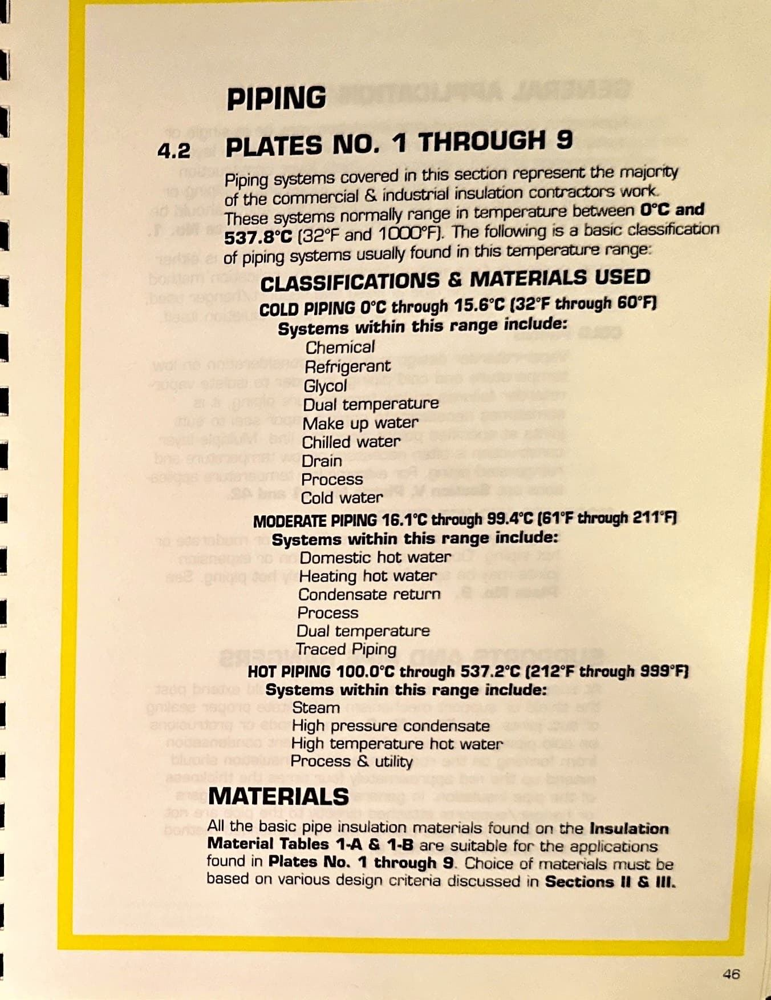
4.2 PIPING PLATES NO.
1 THROUGH 9 Piping systems covered in this secuon represent the majorty of the commercial & industnal insulation conü•adors work.
These systems normally range in temperature between OOC and 537.BOC (320F and IOOOOFJ.
The followng is a basc classification of piping systems usually found in this temperature range: CLASSIFICATIONS & MATERIALS USED COLD PIPING OOC through 15.60C t320F through GOOF) Systems within this range include: Chemical Refrigerant Glycol Dual temperature Make up water Chilled water Drain Process Cold water MODERATE PIPING IS.IOC through ss.40C (610F through 211'fl Systems within this range include: Domestic hot water Heating hot water Condensate return Process Dual temperature Traced Piping HOT PIPING 100.OOC through 537.20C (2120F through SSSOF) Systems within this range include: Steam High pressure condensate High temperature hot water Process & utility MATERIALS All the basic pipe insulation materials found on the Insulation Material Tables I-A & I-B are suitable for the applications found in Plates No.
1 through 9.
Choice of materials must be based on various design criteria discussed in Sections II S Ill.
46
Page 53
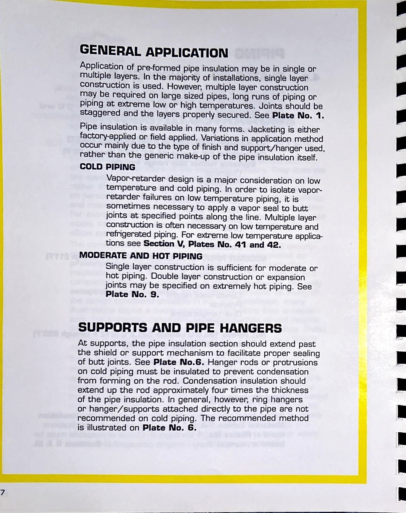
GENERAL APPLICATION Application of pre-formed pipe insulation may be in single or multiple layers.
In the majority of installations, single layer construction is used.
However, multiple layer construction may be required on large sized pipes, long runs of piping or piping at extreme low or high temperatures.
Joints should be staggered and the layers properly secured.
See Plate No.
1.
Pipe insulation is available in many forms.
Jacketing is either factory-applied or field applied.
Variations in application method occur mainly due to the type of finish and support/hanger used, rather than the generic make-up of the pipe insulation itself.
COLD PIPING Vapor-retarder design is a major consideration on low temperature and cold piping.
In order to isolate vapor- retarder failures on low temperature piping, it is sometimes necessary to apply a vapor seal to butt joints at specified points along the line.
Multiple layer construction is often necessary on low temperature and refrigerated piping.
For extreme low temperature applica- tions see Section V, Plates No.
41 and 42.
MODERATE AND HOT PIPING Single layer construction is sufficient for moderate or hot piping.
Double layer construction or expansion joints may be specified on extremely hot piping.
See Plate No.
9.
SUPPORTS AND PIPE HANGERS At supports, the pipe insulation section should extend past the shield or support mechanism to facilitate proper sealing of butt joints.
See Plate No.6.
Hanger rods or protrusions on cold piping must be insulated to prevent condensation from forming on the rod.
Condensation insulation should extend up the rod approximately four times the thickness of the pipe insulation.
In general, however, ring hangers or hanger/ supports attached directly to the pipe are not recommended on cold piping.
The recommended method is illustrated on Plate No.
6.
7
Page 54
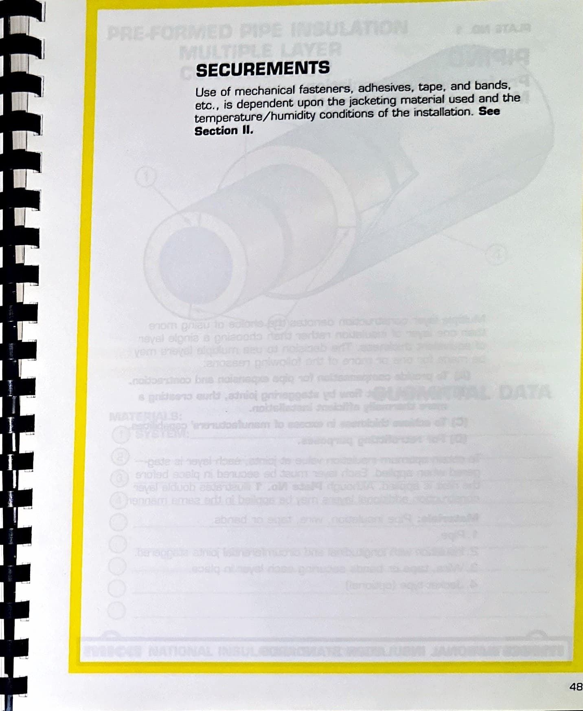
SECUREMENTS Use of mechanical fasteners, adhesives, taper and bands, etc., is dependent upon the jacketing material used and the temperature/ humidity conditions of the installation.
See Section II.
Page 55
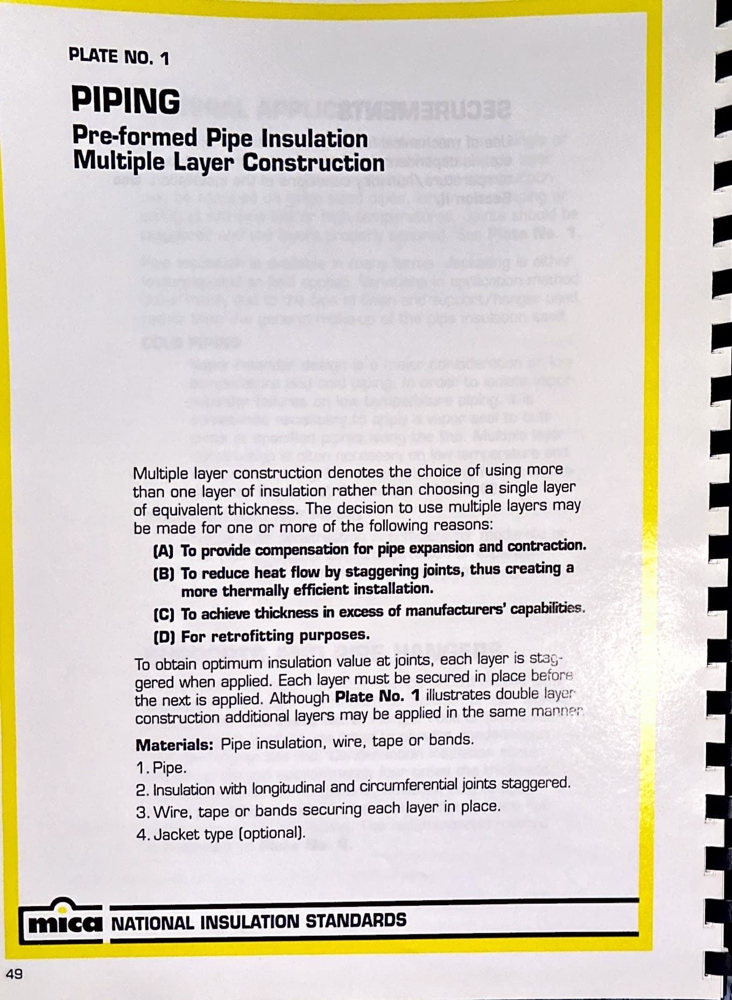
PLATE NO.
1 PIPING Pre-formed Pipe Insulation Multiple Layer Construction Multiple layer construction denotes the choice of using more than one layer of insulation rather than choosing a single layer of equivalent thickness.
The decision to use multiple layers may be made for one or more of the following reasons: (A) To provide compensaüon for pipe expansion and contraction.
(B) To reduce heat flow by staggering joints, thus creating a more thermally efficient installation.
(C) To achieve thickness in excess of manufacturers' capabilities.
(D) For retrofitting purposes.
To obtain optimum insulation value at joints, each layer is stag- gered when applied.
Each layer must be secured in place before the next is applied.
Although Plate No.
1 illustrates double layer construction additional layers may be applied in the same manner Materials: Pipe insulation, wire, tape or bands.
1.
Pipe.
2.
Insulation with longiwdinal and circumferential joints staggered.
8.
Wire, tape or bands securing each layer in place.
4.
Jacket type (optional).
muca NATIONAL INSULATION STANDARDS 49
Page 56
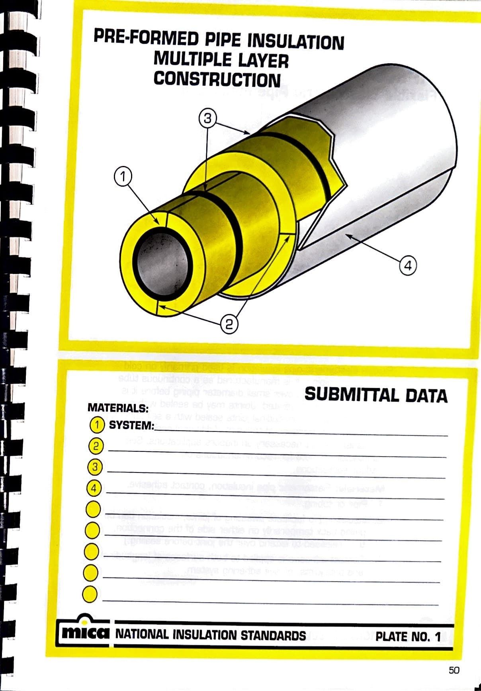
PREFORMED PIPE INSULATION MULTIPLE LAYER CONSTRUCTION SUBMITTAL DATA MATERIALS: SYSTEM: nuca NATIONAL INSULATION STANDARDS PLATE NO.
1
Page 57
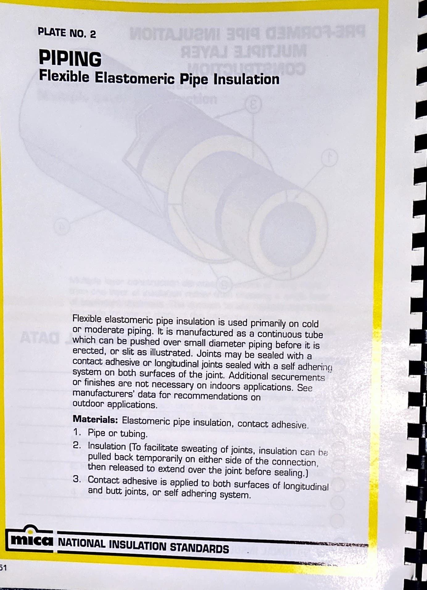
PLATE NO.
2 PIPING Flexible Elastomeric Pipe Insulation Flexible elastomeric pipe insulation is used primarily on cold or moderate piping.
It is manufactured as a continuous tube which can be pushed over small diameter piping before it is erected, or slit as illustrated.
Joints may be sealed with a contact adhesive or longitudinal joints sealed with a self adhering system on both surfaces of the joint.
Additional securements or finishes are not necessary on indoors applications.
See manufacturers' data for recommendations on outdoor applications.
Materials: Elastomeric pipe insulation, contact adhesive.
1.
2.
3.
Pipe or tubing.
Insulation (To facilitate sweating of joints, insulation can ha pulled back temporarily on either side of the connection, then released to extend over the joint before sealing.) Contact adhesive is applied to both surfaces of longitudinal and butt joints, or self adhering system.
muca NATIONAL INSULATION STANDARDS 1
Page 58
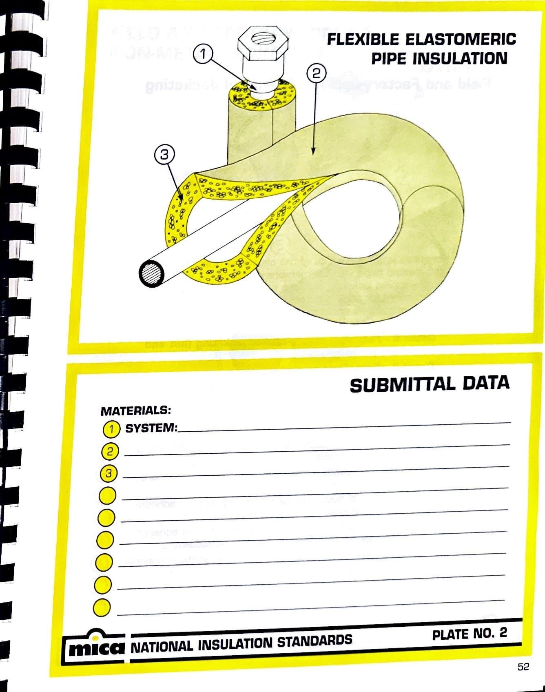
MATERIALS: SYSTEM: muca NATIONAL INSULATION STANDARDS FLEXIBLE ELASTOMERIC PIPE INSULATION SUBMITTAL DATA PLATE No.
2 52
Page 59
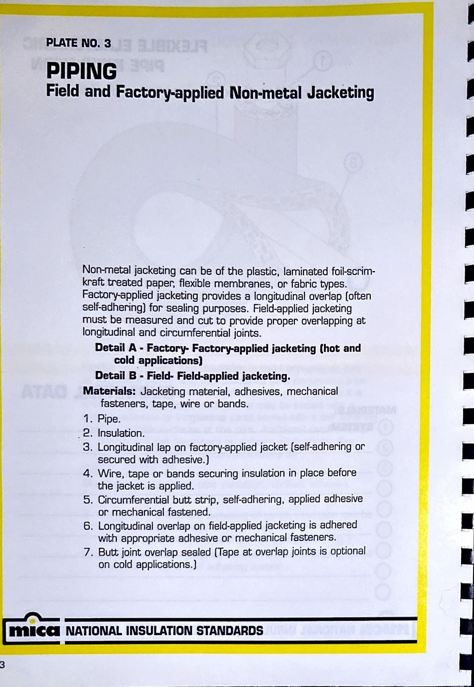
PLATE NO.
3 PIPING Field and Factory-applied Non-metal Jacketing Non-metal jacketing can be of the plastic, laminated foil-scrim- kraft treated paper, flexible membranes, or fabric types.
Factory-applied jacketing provides a longitudinal overlap (often self-adhering) for sealing purposes.
Field-applied jacketing must be measured and cut to provide proper overlapping at longitudinal and circumferential joints.
Detail A • Factory- Factory-applied jacketing (hot and cold applications) Detail B - Field- Field-applied jacketing.
Materials: Jacketing material, adhesives, mechanical fasteners, tape, wire or bands.
1.
Pipe.
2.
Insulation.
Longitudinal lap on factory-applied jacket (self-adhering or 3.
secured with adhesive.) 4.
Wire, tape or bands securing insulation in place before the jacket is applied.
Circumferential but strip, self-adhering, applied adhesive 5.
or mechanical fastened.
Longitudinal overlap on field-applied jacketing is adhered 6.
with appropriate adhesive or mechanical fasteners.
But joint overlap sealed (Tape at overlap joints is optional 7.
on cold applications.) nuca NATIONAL INSULATION STANDARDS
Page 60
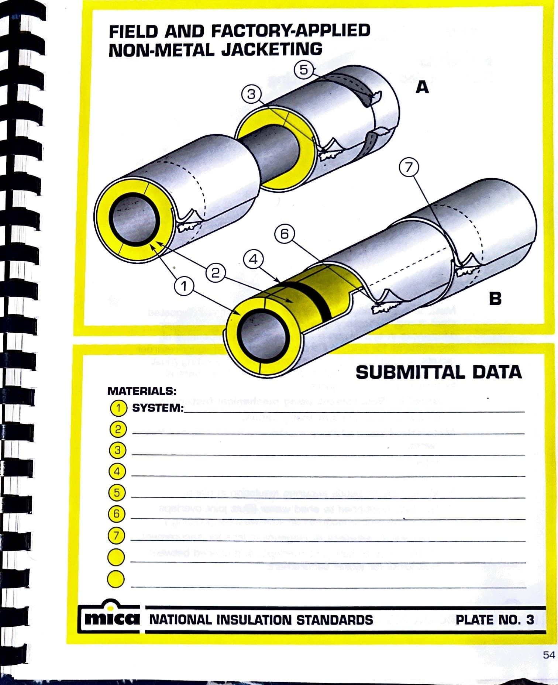
FIELD AND FACTORY-APPLIED NON-METAL JACKETING SUBMITTAL DATA MATERIALS: SYSTEM: m•ca NATIONAL INSULATION STANDARDS PLATE NO.
3 54
Page 61
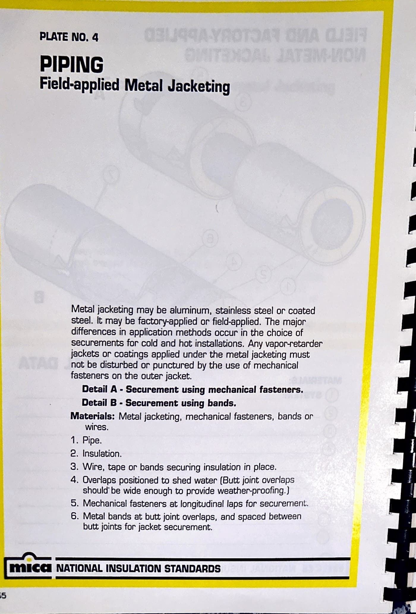
PLATE NO.
4 PIPING Field-applied Metal Jacketing Metal jacketing may be aluminum, stainless steel or coated steel.
It may be factory-applied or field-applied.
The major differences in application methods occur in the choice of securements for cold and hot installations.
Any vapor-retarder jackets or coatings applied under the metal jacketing must not be disturbed or punctured by the use of mechanical fasteners on the outer jacket.
Detail A - Securement using mechanical fasteners.
Detail B Securement using bands.
Materials: Metal jacketing, mechanical fasteners, bands or wires.
Pipe.
2.
Insulation.
a.
Wire, tape or bands securing insulation in place.
4.
Overlaps positioned to shed water (Butt joint overlaps should• be wide enough to provide weather-proofing.) 5.
Mechanical fasteners at longitudinal laps for securement.
6.
Metal bands at but joint overlaps, and spaced between buü joints for jacket securement.
muca NATIONAL INSULATION STANDARDS
Page 62
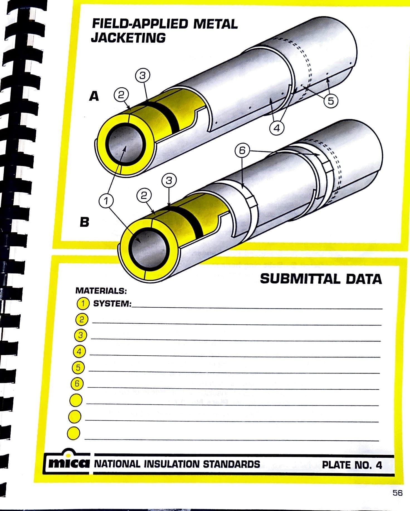
FIELD-APPLIED METAL JACKETING SUBMITTAL DATA MATERIALS: SYSTEM: muca NATIONAL INSULATION STANDARDS PLATE NO.
4 56
Page 63
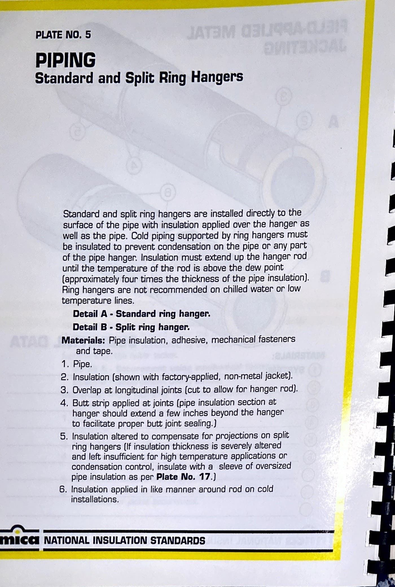
PLATE NO.
5 PIPING Standard and Split Ring Hangers Standard and split ring hangers are installed directly to the surface of the pipe with insulation applied over the hanger as well as the pipe.
Cold piping supported by ring hangers must be insulated to prevent condensation on the pipe or any part of the pipe hanger.
Insulation must extend up the hanger rod until the temperature of the rod is above the dew point (approximately four times the thickness of the pipe insulation).
Ring hangers are not recommended on chilled water or low temperature lines.
Detail A - Standard ring hanger.
Detail B • Split ring hanger.
Materials: Pipe insulation, adhesive, mechanical fasteners 1.
2.
3.
4.
5.
6.
and tape.
Pipe.
Insulation (shown with factory-applied, non-metal jacket).
Overlap at longitudinal joints (cut to allow for hanger rod).
Butt strip applied at joints (pipe insulation section at hanger should extend a few inches beyond the hanger to facilitate proper butt joint sealing.) Insulation altered to compensate for projections on split ring hangers (If insulation thickness is severely altered and left insufficient for high temperature applications or condensation control, insulate with a sleeve of oversized pipe insulation as per Plate No.
17.) Insulation applied in like manner around rod on cold installations.
muca NATIONAL INSULATION STANDARDS
Page 64
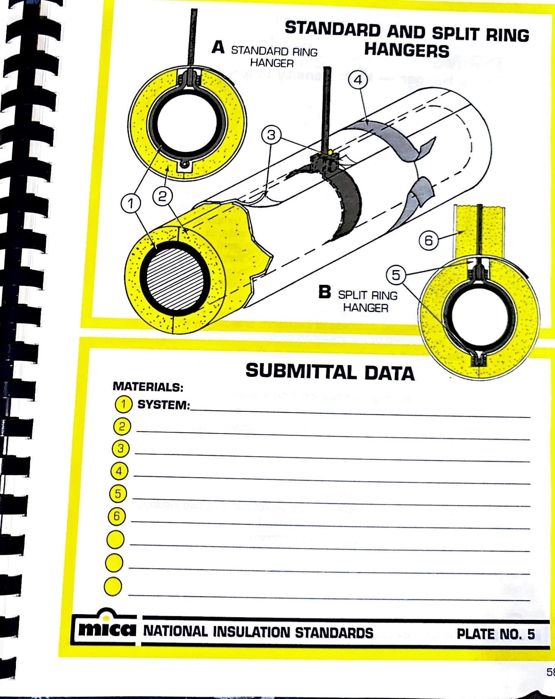
STANDARD AND SPLIT RING A 2 1 MATERIALS: O SYSTEM: STANDARD RING HANGER 8 4 HANGERS 6 5 B SPLIT RING HANGER SUBMITTAL DATA nuca NATIONAL INSULATION STANDARDS PLATE NO.
5
Page 65
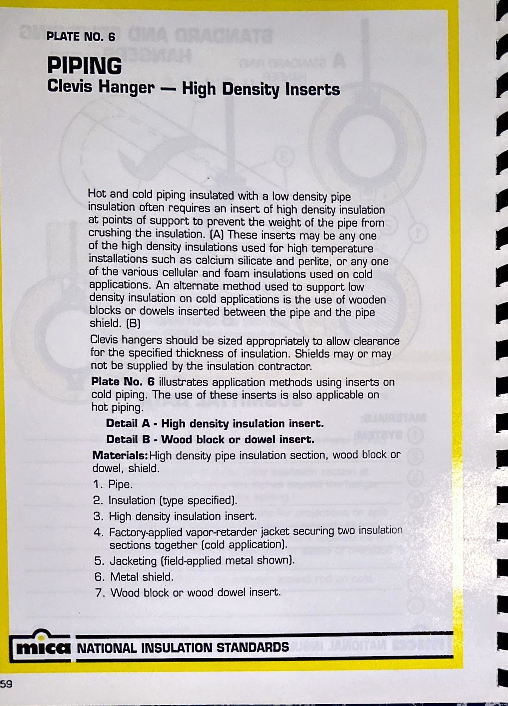
PLATE NO.
6 PIPING Clevis Hanger — High Density Inserts Hot and cold piping insulated with a low density pipe insulation often requires an insert of high density insulation at points of support to prevent the weight of the pipe from crushing the insulation.
(A) These inserts may be any one of the high density insulations used for high temperature installations such as calcium silicate and perlite, or any one of the various cellular and foam insulations used on cold applications.
An alternate method used to support low density insulation on cold applications is the use of wooden blocks or dowels inserted between the pipe and the pipe shield.
(B) Clevis hangers should be sized appropriately to allow clearance for the specified thickness of insulation.
Shields may or may not be supplied by the insulation contractor.
Plate No.
6 illustrates application methods using inserts on cold piping.
The use of these inserts is also applicable on hot piping.
Detail A • High density insulation insert.
Detail B - Wood block or dowel insert.
Materials: High density pipe insulation section, wood block or dowel, shield.
1.
2.
3.
4.
5.
6.
7.
Pipe.
Insulation (type specified).
High density insulation insert.
Factory-applied vapor-retarder jacket securing two insulation sections together (cold application).
Jacketing (field-applied metal shown).
Metal shield.
Wood block or wood dowel insert.
muca NATIONAL INSULATION STANDARDS 59
Page 66
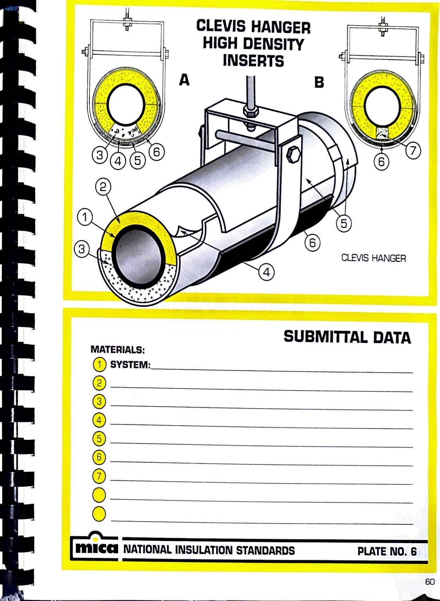
CLEVIS HANGER HIGH DENSITY INSERTS CLEVIS HANGER SUBMITTAL DATA MATERIALS: SYSTEM: nuca NATIONAL INSULATION STANDARDS PLATE NO.
6 60
Page 67
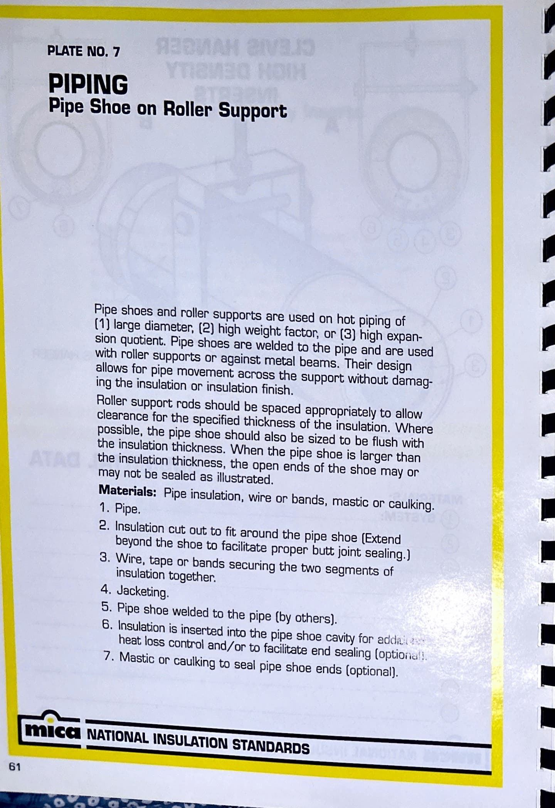
PLATE No.
7 PIPING Pipe Shoe on Roller Support Pipe shoes and roller supports are used on hot piping of (1) large diameter, (2) high weight factor, or (3) high expan- Sion quotient.
Pipe shoes are welded to the pipe and are used with roller supports or against metal beams.
Their design allows for pipe movement across the support without damag- ing the insulation or insulation finish.
Roller support rods should be spaced appropriately to allow clearance for the specified thickness of the insulation.
Where possible.
the pipe shoe should also be sized to be flush with the insulation thickness.
When the pipe shoe is larger than the insulation thickness, the open ends of the shoe may or may not be sealed as illustrated.
Materials: Pipe insulation, wire or bands, mastic or caulking.
1.
Pipe.
2.
Insulation cut out to fit around the pipe shoe (Extend beyond the shoe to facilitate proper butt joint sealing.) 8.
Wire, tape or bands securing the two segments of insulation together.
4.
Jacketing, 5.
Pipe shoe welded to the pipe (by others).
6.
Insulation is inserted into the pipe shoe cavity for heat loss control and/or to facilitate end sealing (optionåi.
7.
Mastic or caulking to seal pipe shoe ends (optional).
muca NATIONAL INSULATION STANDARDS 61
Page 68
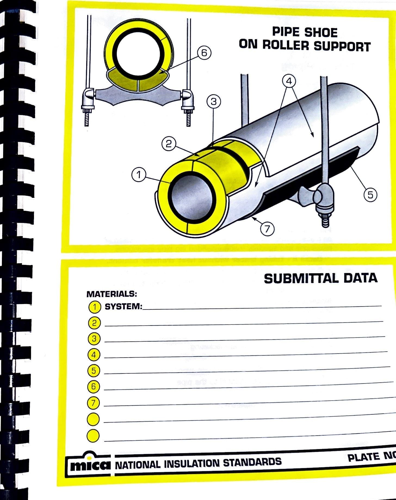
4410 MATERIALS: SYSTEM: PIPE SHOE ON ROLLER SUPPORT SUBMITTAL DATA nuca NATIONAL INSULATION STANDARDS PLATE N
Page 69
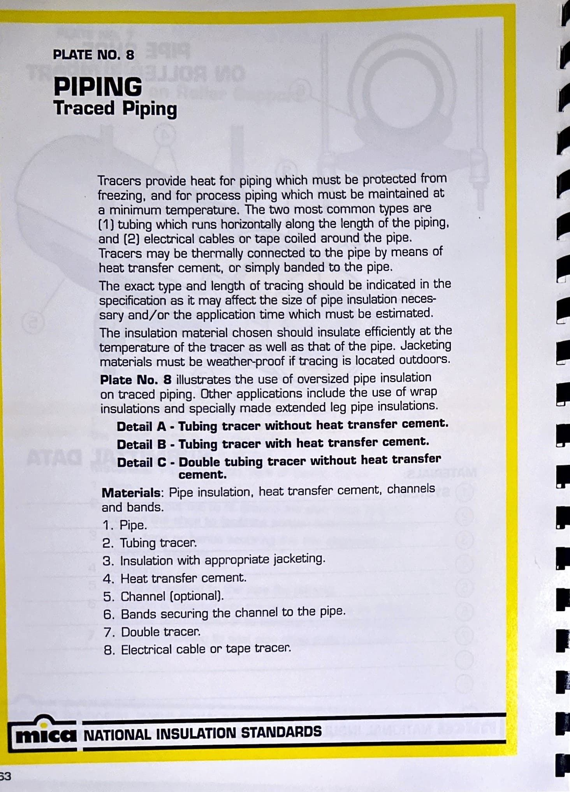
PLATE NO.
8 PIPING Traced Piping Tracers provide heat for piping which must be protected from freezing, and for process piping which must be maintained at a minimum temperature.
The two most common types are (1) tubing which runs horizontally along the length of the piping, and (2) electrical cables or tape coiled around the pipe.
Tracers may be thermally connected to the pipe by means of heat transfer cement, or simply banded to the pipe.
The exact type and length of tracing should be indicated in the specification as it may affect the size of pipe insulation neces- sary and/or the application time which must be estimated.
The insulation material chosen should insulate efficiently at the temperature of the tracer as well as that of the pipe.
Jacketing materials must be weather-proof if tracing is located outdoors.
Plate No.
8 illustrates the use of oversized pipe insulation on traced piping.
Other applications include the use of wrap insulations and specially made extended leg pipe insulations.
Detail A - Tubing tracer without heat transfer cement.
Detail B - Tubing tracer with heat transfer cement.
Detail C - Double tubing tracer without heat transfer cement.
Materials: Pipe insulation, heat transfer cement, channels and bands.
1.
2.
3.
4.
5.
6.
7.
8.
Pipe.
Tubing tracer.
Insulation with appropriate jacketing.
Heat transfer cement.
Channel (optional).
Bands securing the channel to the pipe.
Double tracer.
Electrical cable or tape tracer.
muca NATIONAL INSULATION STANDARDS
Page 70
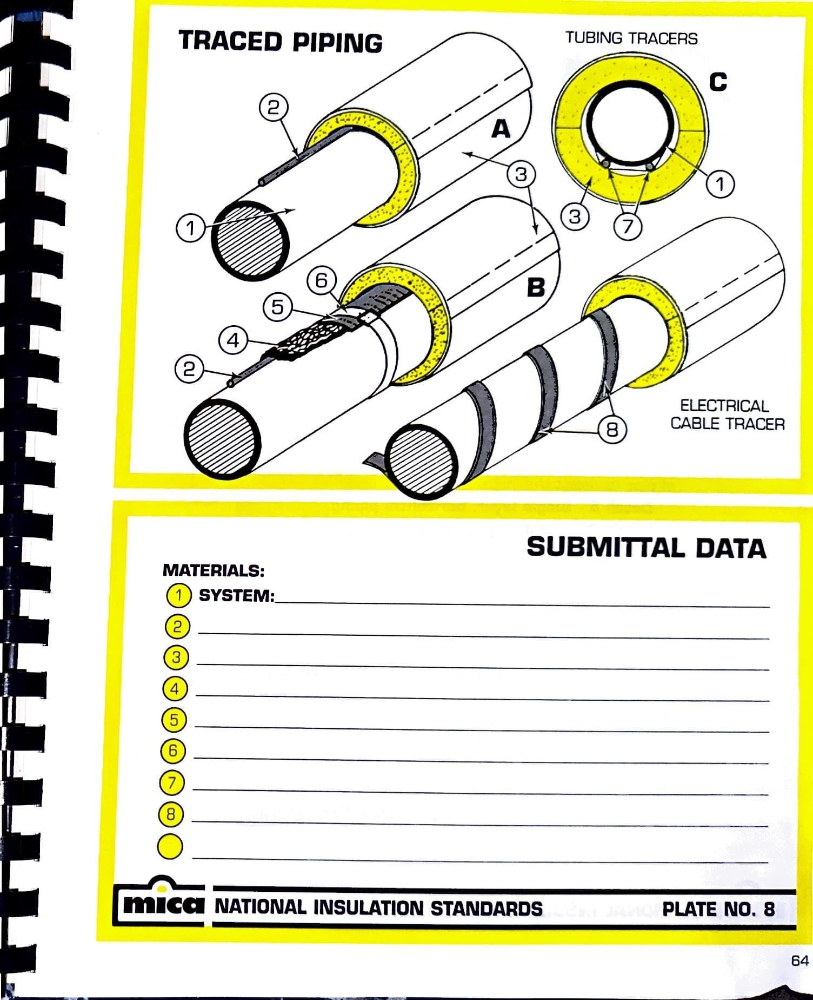
TRACED PIPING MATERIALS: SYSTEM: TUBING TRACERS ELECTRICAL CABLE TRACER SUBMITTAL DATA nuca NATIONAL INSULATION STANDARDS PLATE NO.
8 64
Page 71
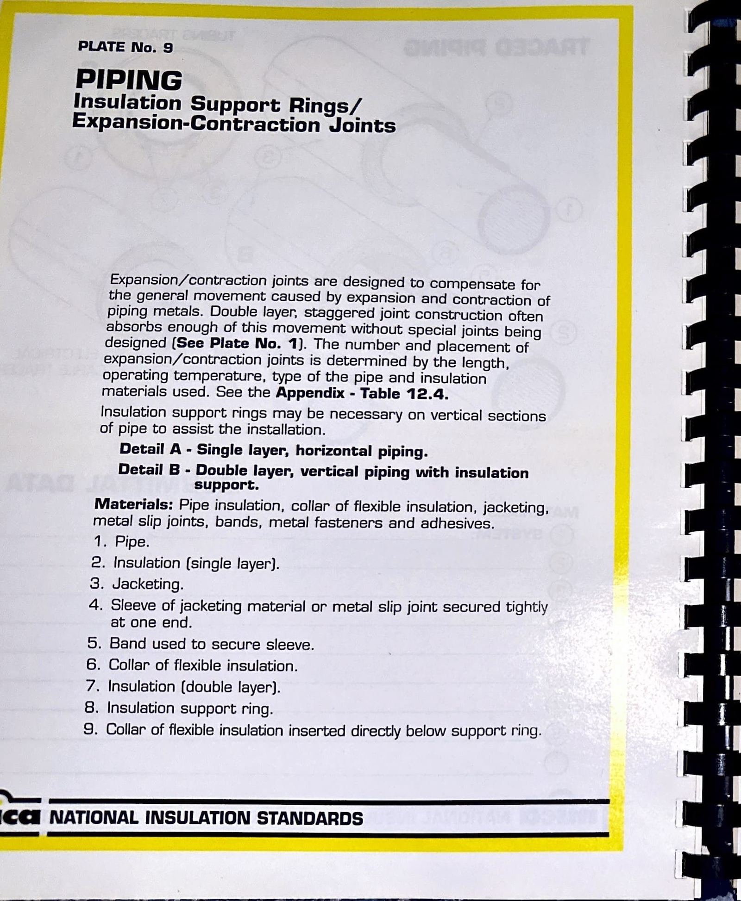
PLATE No.
S PIPING Insulation Support Rings/ Expansion-Contraction Joints Expansion/contraction joints are designed to compensate for the general movement caused by expansion and contraction of piping metals.
Double layer, staggered joint construction often absorbs enough of this movement without special joints being designed (See Plate No.
1).
The number and placement of expansion/ contraction joints is determined by the length, operating temperature, type of the pipe and insulation materials used.
See the Appendix - Table 12.4.
Insulation support rings may be necessary on vertical sections of pipe to assist the installation.
Detail A - Single layer, horizontal piping.
Detail B - Double layer, vertical piping with insulation support.
Materials: Pipe insulation, collar of flexible insulation, jacketing, metal slip joints, bands, metal fasteners and adhesives.
2.
3.
4.
5.
6.
7.
8.
9.
Pipe.
Insulation (single layer).
Jacketing.
Sleeve of jacketing material or metal slip joint secured tightly at one end.
Band used to secure sleeve.
Collar of flexible insulation.
Insulation (double layer).
Insulation support ring.
Collar of flexible insulation inserted directly below support ring.
ea NATIONAL INSULATION STANDARDS
Page 72
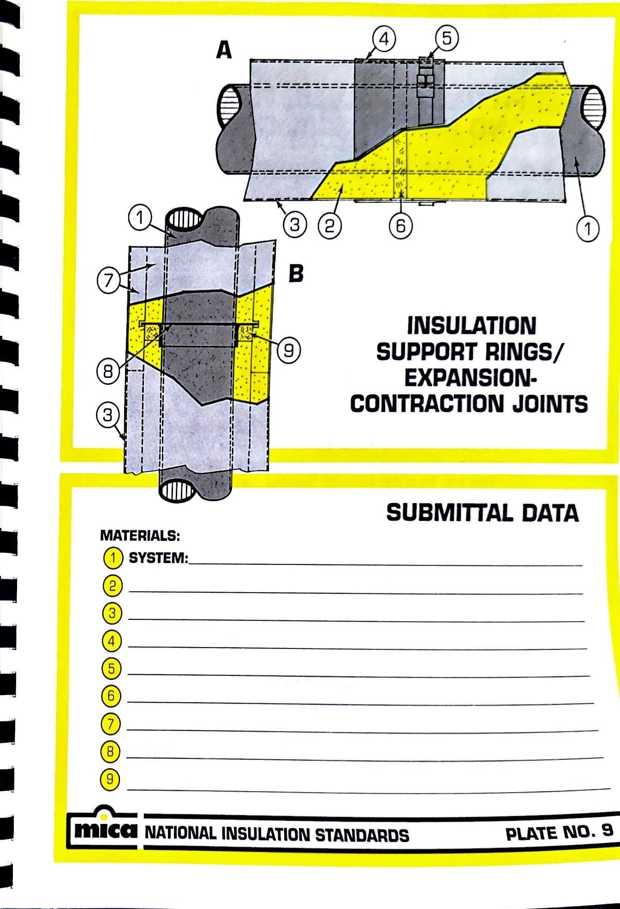
8 MATERIALS: SYSTEM: 2 INSULATION SUPPORT RINGS/ EXPANSION.
CONTRACTION JOINTS SUBMITTAL DATA muca NATIONAL INSULATION STANDARDS PLATE NO.
S
Page 73
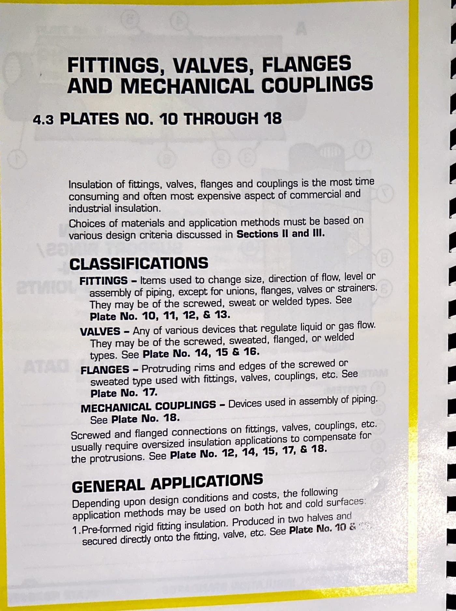
FITTINGS, VALVES, FLANGES AND MECHANICAL COUPLINGS 4.3 PLATES No.
10 THROUGH 18 Insulation of fitings, valves, flanges and couplings is the most time consuming and often most expensive aspect of commercial and industrial insulation.
Choices of materials and application methods must be based on various design criteria discussed in Sections II and III.
CLASSIFICATIONS FITTINGS — Items used to change size, direction of flow, level or assembly of piping, except for unions, flanges, valves or strainers.
They may be of the screwed, sweat or welded types.
See Plate No.
10, 11, 12, & 13.
VALVES — Any of various devices that regulate liquid or gas flow.
They may be of the screwed, sweated, flanged, or welded types.
see Plate No.
14, 15 & 16.
FLANGES — Protruding rims and edges of the screwed or sweated type used with fittings, valves, couplings, etc.
See Plate No.
17.
MECHANICAL COUPLINGS — Devices used in assembly of piping.
see Plate No.
18.
Screwed and flanged connections on fittings, valves, couplings, etc.
usually require oversized insulation applications to compensate for the protrusions.
see Plate No.
12, 14, 15, 17, & 18.
GENERAL APPLICATIONS Depending upon design conditions and costs, the following application methods may be used on both hot and cold surfaces.
1 .Pre-formed rigid fiting insulation.
Produced in two halves and secured directly onto the fiting, valve, etc.
See Plate No.
IO &
Page 74
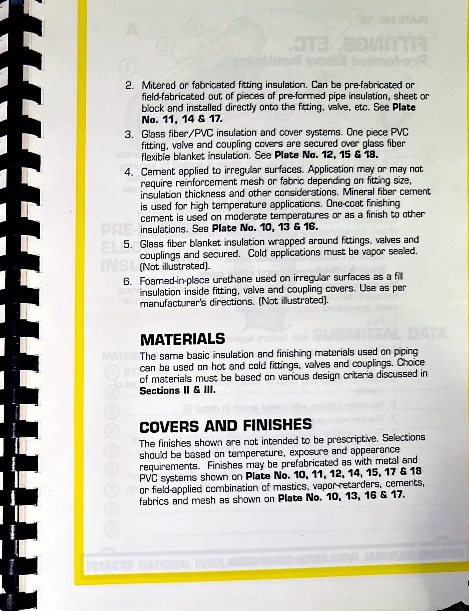
2.
3.
4.
5.
6.
Mitered or fabricated füing insulation.
Can be pre-fabricated or field-fabricated out of pieces of pre-formed pipe insulation, sheet or block and installed directly onto the fiting, valve, etc.
See Plate No.
11, 14 & 17.
Glass fiber/PVC insulation and cover systems.
One piece PVC fitting, valve and coupling covers are secured over glass fiber flexible blanket insulation.
See Plate No.
12, 15 & 18.
Cement applied to irregular surfaces.
Applicabon may or may not require reinforcement mesh or fabric depending on fitng size, insulation thickness and other considerations.
Mineral fiber cement is used for high temperature applications.
One-coat finishing cement is used on moderate temperatures or as a finish to other insulations.
See Plate No.
IO, 13 & 16.
Glass fiber blanket insulation wrapped around füngs, valves and couplings and secured.
Cold applications must be vapor sealed.
(Not illustrated).
Foamed-in-place urethane used on irregular surfaces as a fill insulation inside fitting, valve and coupling covers.
use as per manufacturer's directions.
(Not illustrated).
MATERIALS The same basic insulation and finishing materials used on piping can be used on hot and cold fittings, valves and couplings.
Choice of materials must be based on various design criteria discussed in Sections II & III.
COVERS AND FINISHES The finishes shown are not intended to be prescriptive.
Selections should be based on temperature, exposure and appearance requirements.
Finishes may be prefabricated as with metal and PVC systems shown on Plate No.
10, 11, 12, 14, 15, 17 & 18 or field-applied combination of mastics, vapor-retarders, cements, fabrics and mesh as shown on Plate No.
10, 13, 16 & 17.
Page 75
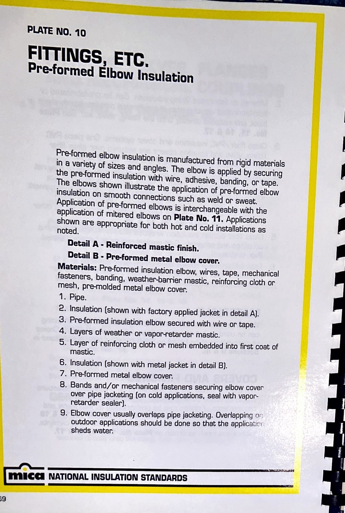
PLATE NO.
10 FITTINGS, ETC.
Pre•formed Elbow Insulation Pre-formed elbow insulation is manufactured from rigid materials in a variety of sizes and angles.
The elbow is applied by securing the pre-formed insulation with wire, adhesive, banding, or tape.
The elbows shown illustrate the application of pre-formed elbow insulation on smooth connections such as weld or sweat.
Application of pre-formed elbows is interchangeable with the application of mitered elbows on Plate No.
11.
Applications shown are appropriate for both hot and cold installations as noted.
Detail A Reinforced mastic finish.
Detail B • Pre-formed metal elbow cover.
Materials: Pre-formed insulation elbow, wires, tape, mechanical fasteners, banding, weather-barrier mastic, reinforcing cloth or mesh, pre-molded metal elbow cover.
1.
Pipe.
2.
Insulation (shown with factory applied jacket in detail A).
a.
Pre-forrned insulation elbow secured with wire or tape.
4.
Layers of weather or vapor-retarder mastic.
5.
Layer of reinforcing cloth or mesh embedded into first coat of mastic.
6.
Insulation (shown with metal jacket in detail B).
7.
Pre-formed metal elbow cover.
8.
Bands and/or mechanical fasteners securing elbow cover over pipe jacketing (on cold applications.
seal with vapor- retarder sealer).
9.
Elbow cover usually overlaps pipe jacketing.
Overlapping outdoor applications should be done so that the application sheds water.
9
Page 76
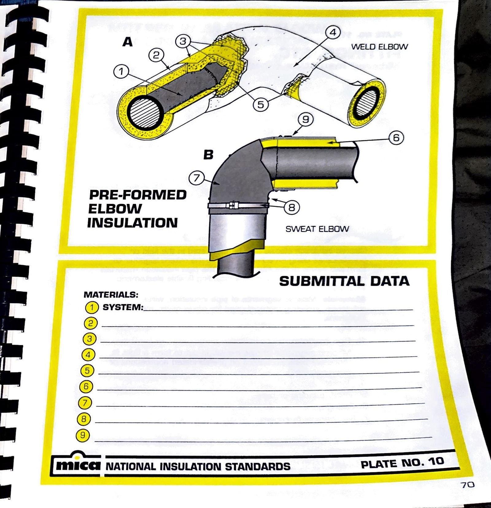
PREFORMED ELBOW INSULATION MATERIALS: SYSTEM: WELD ELBOW SWEAT ELBOW SUBMITTAL DATA muca NATIONAL INSULATION STANDARDS PLATE NO.
no 70
Page 77
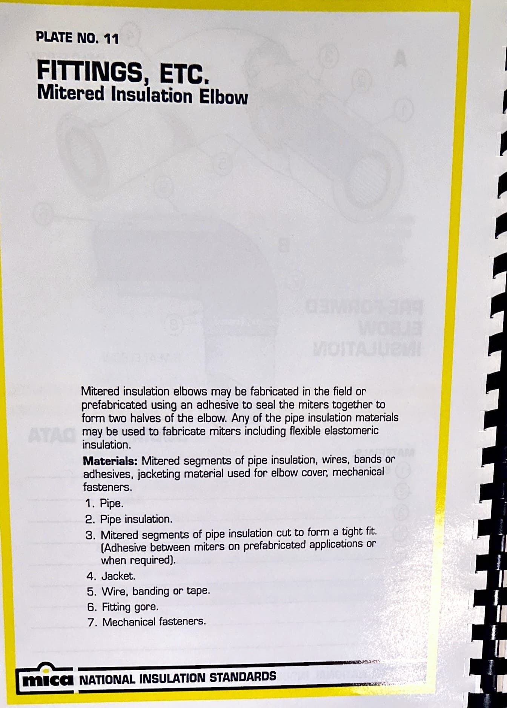
PLATE NO.
11 FITTINGS, ETC.
Mitered Insulation Elbow Mitered insulation elbows may be fabricated in the field or prefabricated using an adhesive to seal the miters together to form buo halves of the elbow.
Any of the pipe insulation materials may be used to fabricate miters including flexible elastomeric insulation.
Materials: Mitered segments of pipe insulation, wires, bands or adhesives, jacketing material used for elbow cover, mechanical fasteners.
1.
2.
3.
4.
5.
6.
7.
Pipe.
Pipe insulation.
Mitered segments of pipe insulation cut to form a tight fit.
(Adhesive between miters on prefabricated applications or when required).
Jacket.
Wire, banding or tape.
Fiting gore.
Mechanical fasteners.
nuca NATIONAL INSULATION STANDARDS
Page 78
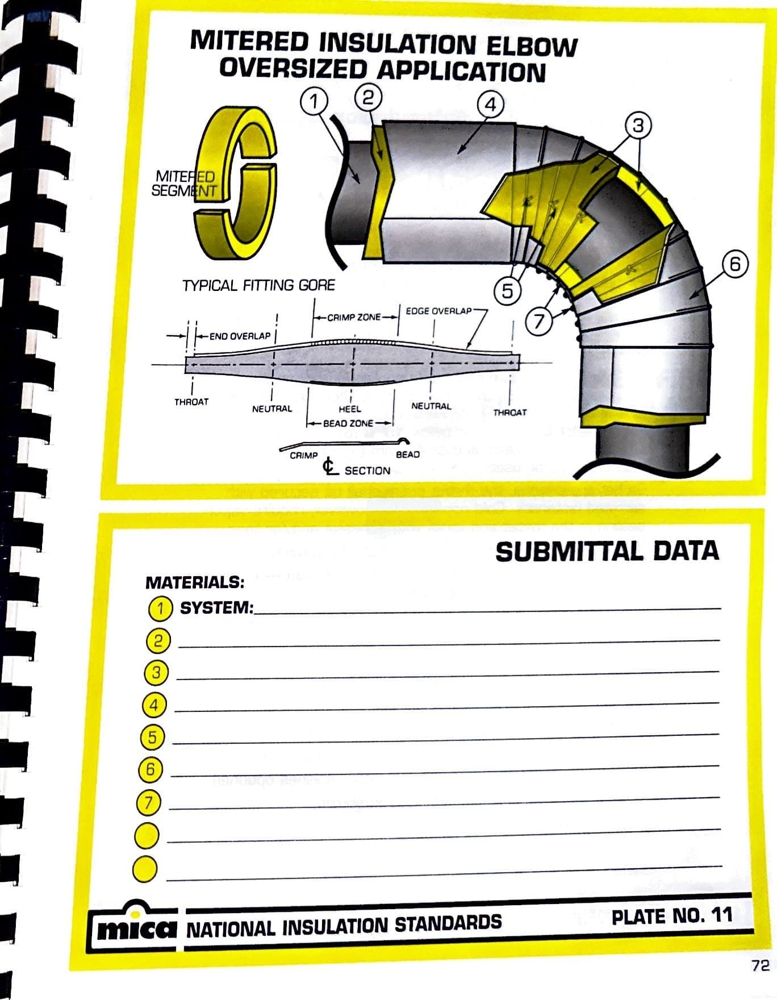
MITERED INSULATION ELBOW OVERSIZED APPLICATION MITE ED SEGM NT TYPICAL FITTING GORE EOGE OVERLAP CRIMP ZONE ENO OVERLAP I THROAT NEUTRAL CRIMp HEEL BEAD ZONE NEIJTAAL THROAT SECTION SUBMITTAL DATA MATERIALS: SYSTEM: PLATE NO.
Page 79
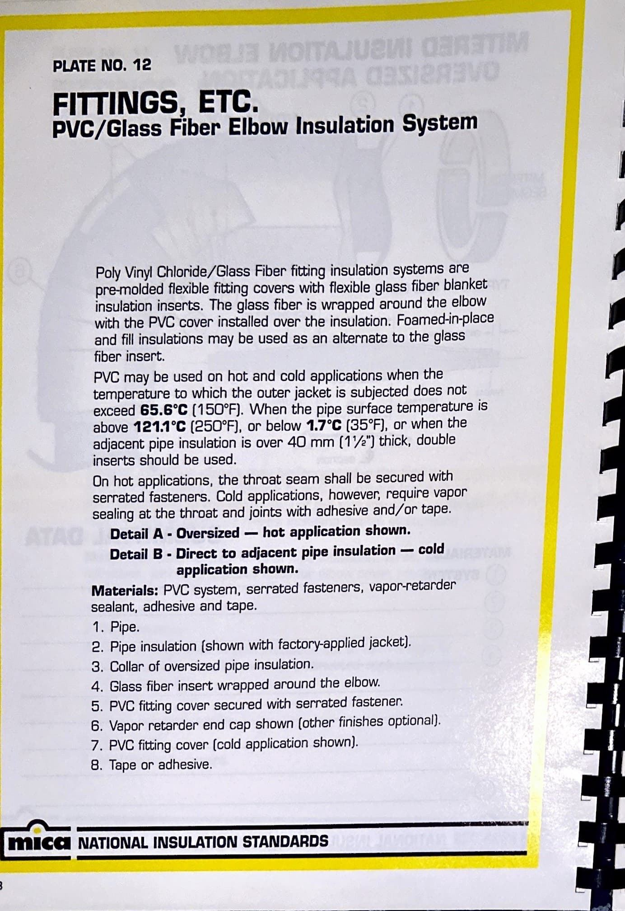
PLATE NO.
12 FITTINGs, ETC.
PVC/GIass Fiber Elbow Insulation System Poly Vinyl Chloride/Glass Fiber fitting insulation systems are pre-molded flexible fitting covers with flexible glass fiber blanket insulation inserts.
The glass fiber is wrapped around the elbow with the PVC cover installed over the insulation.
Foamed-in-place and fill insulations may be used as an alternate to the glass fiber insert.
PVC may be used on hot and cold applications when the temperature to which the outer jacket is subjected does not exceed 65.60C (1500F).
When the pipe surface temperature is above 121.10C (2500F), or below l.rc (350F), or when the adjacent pipe insulation is over 40 mm (11/2") thick, double inserts should be used.
On hot applications, the throat seam shall be secured with serrated fasteners.
Cold applications, however, require vapor sealing at the throat and joints with adhesive and/or tape.
Detail A - Oversized — hot application shown.
Detail B - Direct to adjacent pipe insulation — cold application shown.
Materials: PVC system, serrated fasteners, vapor-retarder sealant, adhesive and tape.
2.
3.
4.
5.
6.
7.
8.
Pipe.
Pipe insulation (shown with factory-applied jacket).
Collar of oversized pipe insulation.
Glass fiber insert wrapped around the elbow.
PVC fitting cover secured with serrated fastener.
Vapor retarder end cap shown (other finishes optional).
PVC fitting cover (cold application shown).
Tape or adhesive.
nuca NATIONAL INSULATION STANDARDS
Page 80
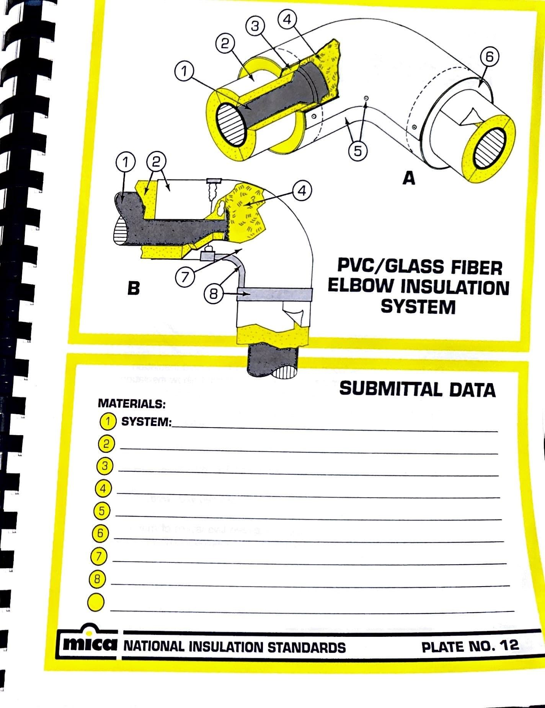
PVC/GLASS FIBER ELBOW INSULATION SYSTEM SUBMITTAL DATA MATERIALS: SYSTEM: muca NATIONAL INSULATION STANDARDS PLATE NO.
Page 81
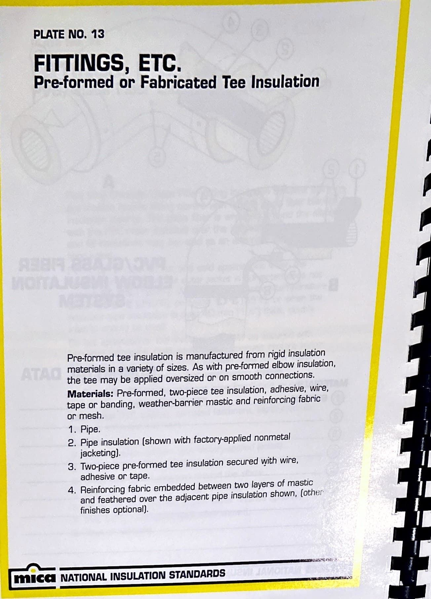
PLATE NO.
13 FITTINGS, ETC.
Pre•formed or Fabricated Tee Insulation Pre-formed tee insulation is manufactured from rigid insulation materials in a variety of sizes.
As with pre-formed elbow insulation, the tee may be applied oversized or on smooth connections.
Materials: Pre-formed, two-piece tee insulation, adhesive, wire, tape or banding, weather-barrier mastic and reinforcing fabric or mesh.
1.
Pipe.
2.
Pipe insulation (shown with factory-applied nonmetal jacketing).
3.
Two-piece pre-formed tee insulation secured With wire, adhesive or tape.
4.
Reinforcing fabric embedded between two layers of masttc and feathered over the adjacent pipe insulation shown, (other finishes optional).
muca NATIONAL INSULATION STANDARDS
Page 82
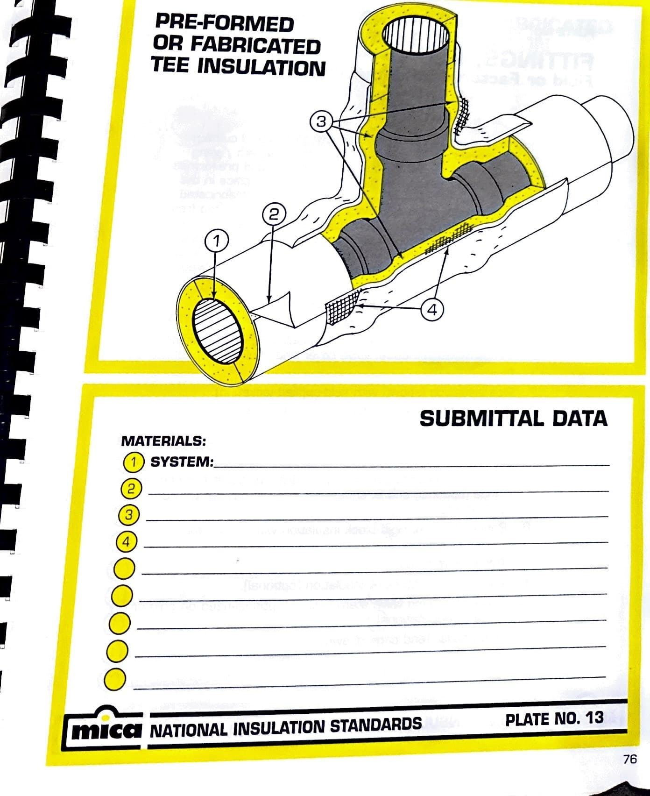
PRE-FORMED OR FABRICATED TEE INSULATION MATERIALS: SYSTEM: mrca NATIONAL INSULATION STANDARDS SUBMITTAL DATA PLATE NO.
13 76
Page 83
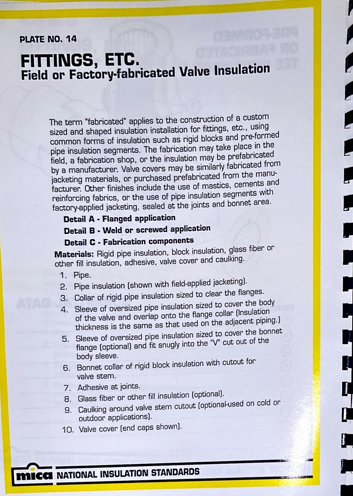
PLATE NO.
14 FITTINGS, ETC.
Field or Factory-fabricated Valve Insulation The term "fabricated" applies to the construction of a custom sized and shaped insulation installation for fittings, etc., using common forms of insulation such as rigid blocks and pre-formed pipe insulation segments.
The fabrication may take place in the field, a fabrication shop, or the insulation may be prefabricated by a manufacturer.
Valve covers may be similarly fabricated from jacketing materials, or purchased prefabricated from the manu- facturer.
Other finishes include the use of mastics, cements and reinforcing fabrics, or the use of pipe insulation segments with factory-applied jacketing, sealed at the joints and bonnet area.
Detail A Flanged application Detail B • Weld or screwed application Detail C • Fabrication components Materials: Rigid pipe insulation, block insulation, glass fiber or other fill insulation, adhesive, valve cover and caulking.
1.
2.
a.
4.
5.
6.
7.
8.
9.
IO.
Pipe.
Pipe insulation (shown with field-applied jacketing).
Collar of rigid pipe insulation sized to clear the flanges.
Sleeve of oversized pipe insulation sized to cover the body of the valve and overlap onto the flange collar (Insulation thickness is the same as that used on the adjacent piping.) Sleeve of oversized pipe insulation sized to cover the bonnet flange (optional) and fit snugly into the "V" cut out of the body sleeve.
Bonnet collar of rigid block insulation with cutout for valve stem.
Adhesive at joints.
Glass fiber or other fill insulation (optional).
Caulking around valve stem cutout (optional-used on cold or outdoor applications).
Valve cover (end caps shown).
nuca NATIONAL INSULATION STANDARDS
Page 84
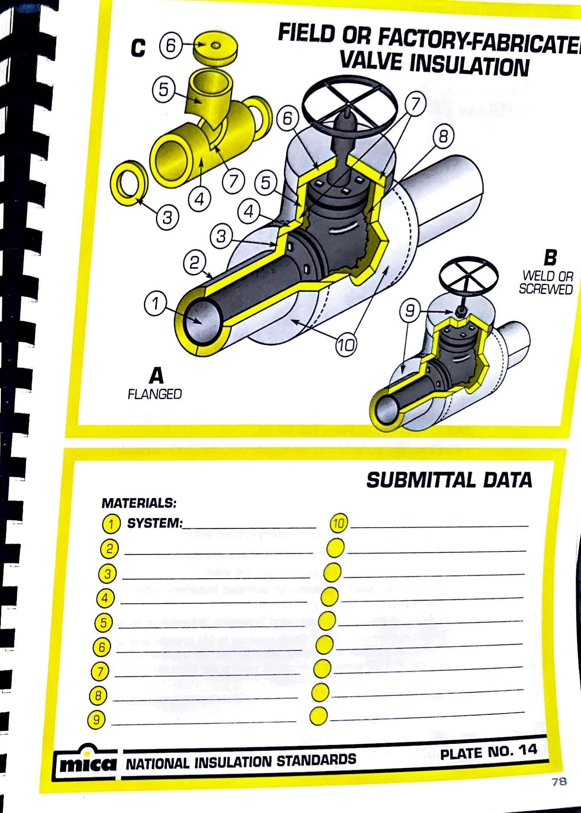
FIELD OR FACTORY-FABRICATI VALVE INSULATION WELD OR SCREWED 10 FLANGED SUBMITTAL DATA MATERIALS: SYSTEM; IO mnca NATIONAL INSULATION STANDARDS PLATE NO.
14 78
Page 85
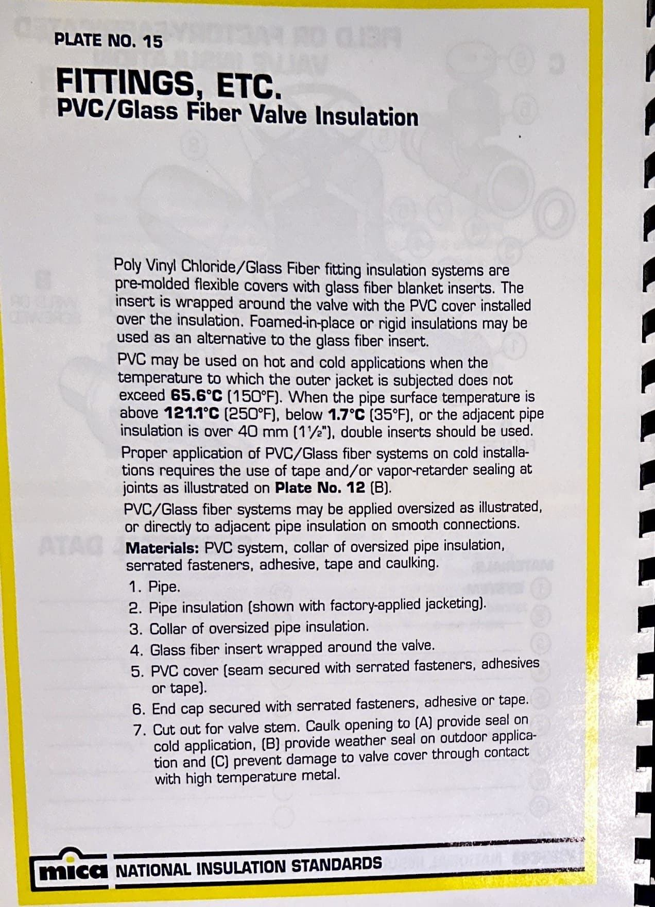
PLATE NO.
15 FITTINGS, ETC.
PVC/Glass Fiber Valve Insulation Poty Vinyl Chloride/Glass fiber fitting insulation systems are pre-molded flexible covers with glass fiber blanket inserts.
The insert is wrapped around the valve with the PVC cover installed over the insulation.
Foamed-in-place or rigid insulations may be used as an alternative to the glass fiber insert.
PVC may be used on hot and cold applications when the temperature to which the outer jacket is subjected does not exceed 65.60C (1500F).
When the pipe surface temperature is above 121.10C (2500F), below 1.70C (350F), or the adjacent pipe insulation is over 40 mm (1 1/2"), double inserts should be used.
Proper application of PVC/Glass fiber systems on cold installa- tions requires the use of tape and/or vapor-retarder sealing at joints as illustrated on Plate No.
12 (B).
PVC/Glass fiber systems may be applied oversized as illustrated, or directly to adjacent pipe insulation on smooth connections.
Materials: PVC system, collar of oversized pipe insulation, serrated fasteners, adhesive, tape and caulking.
2.
8.
4.
5.
6.
7.
Pipe.
Pipe insulation (shown with factory-applied jacketing).
Collar of oversized pipe insulation.
Glass fiber insert wrapped around the valve.
PVC cover (seam secured with serrated fasteners, adhesives or tape).
End cap secured with serrated fasteners, adhesive or tape.
Cut out for valve stem.
Caulk opening to (A) provide seal on cold application, (B) provide weather seal on outdoor applica- tion and (C) prevent damage to valve cover through contact with high temperature metal.
muca NATIONAL INSULATION STANDARDS
Page 86
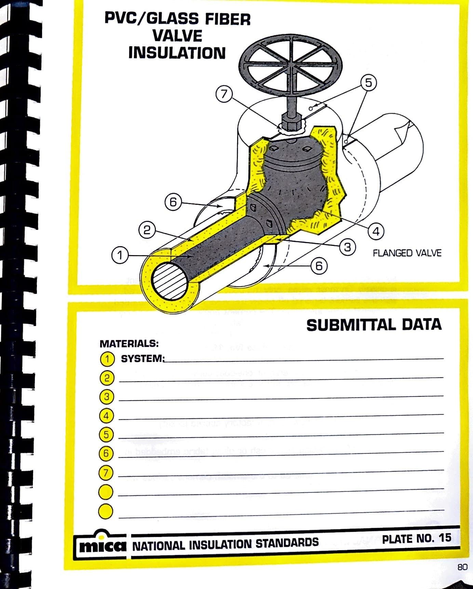
PVC/GLASS FIBER VALVE INSULATION FLANGED VALVE SUBMITTAL DATA MATERIALS: SYSTEM• muca NATIONAL INSULATION STANDARDS PLATE NO.
15
Page 87
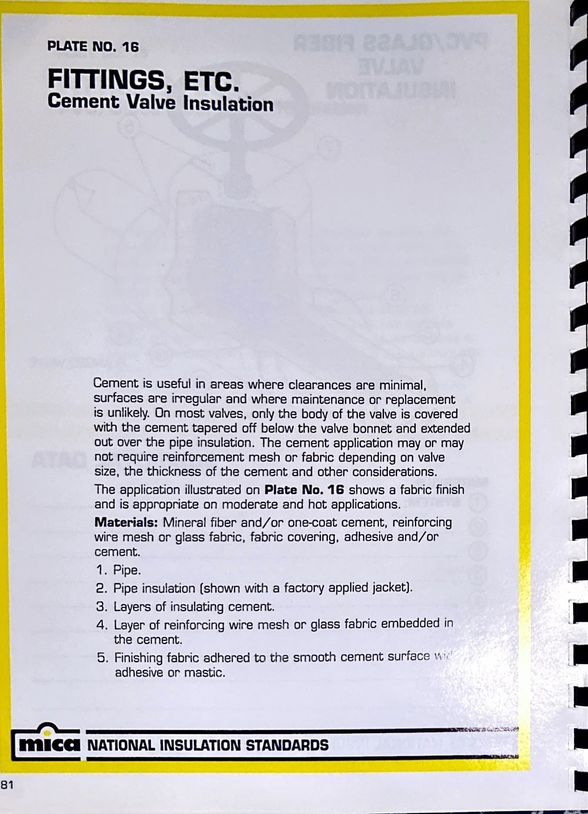
PLATE No.
16 FITTINGS, ETC.
Cement Valve Insulation Cement is usefui in areas where clearances are minimal.
surfaces are irregular and where maintenance or replacement is unlikely.
On most valves, only the body of the valve is covered with the cement tapered off below the valve bonnet and extended out over the pipe insulation.
The cement application may or may not require reinforcement mesh or fabric depending on valve size.
the thickness of the cement and other considerations.
The application illustrated on Plate No.
16 shows a fabric finish and is appropriate on moderate and hot applications.
Materials: Mineral fiber and/or one-coat cement, reinforcing wire mesh or glass fabric, fabric covering, adhesive and/or cement.
1.
Pipe.
2.
Pipe insulation (shown with a factory applied jacket).
3.
Layers of insulating cement.
4.
Layer of reinforcing wire mesh or glass fabric embedded in the cement.
5.
Finishing fabric adhered to the smooth cement surface adhesive or mastic.
mrca NATIONAL INSULATION STANDARDS
Page 88
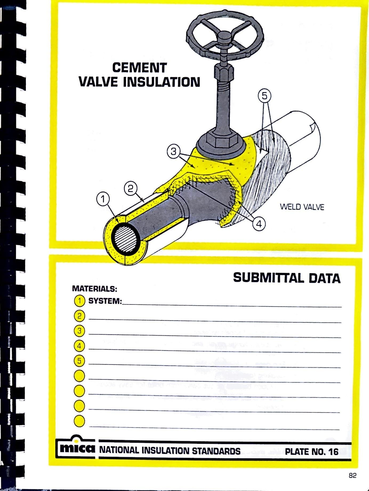
CEMENT VALVE INSULATION WELD VALVE SUBMITTAL DATA MATERIALS: SYSTEM: nuca NATIONAL INSULATION STANDARDS PLATE NO.
16 82
Page 89
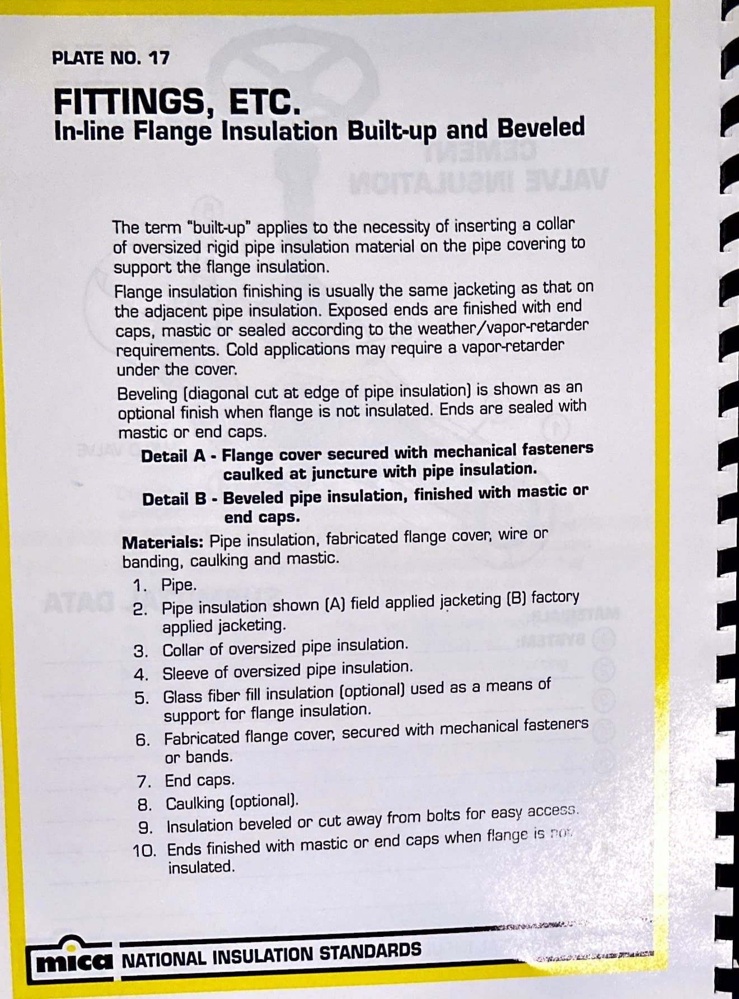
PLATE No.
17 FITTINGS, ETC.
In-line Flange Insulation Built-up and Beveled The term "built-up" applies to the necessity of inserting a collar of oversized rigid pipe insulation material on the pipe covering to support the flange insulation.
Flange insulation finishing is usually the same jacketing as that on the adjacent pipe insulation.
Exposed ends are finished with end caps, mastic or sealed according to the weather/vapor-retarder requirements.
Cold applications may require a vapor-retarder under the cover.
Beveling (diagonal cut at edge of pipe insulation) is shown as an optional finish when flange is not insulated.
Ends are sealed with mastic or end caps.
Detail A • Flange cover secured with mechanical fasteners caulked at juncture with pipe insulation.
Detail B • Beveled pipe insulation, finished with mastic or end caps.
Materials: Pipe insulation, fabricated flange cover, wire or banding, caulking and mastic.
1.
2.
3.
4.
5.
6.
7.
8.
9.
IO.
Pipe.
Pipe insulation shown (A) field applied jacketing (B) factory applied jacketing.
Collar of oversized pipe insulation.
Sleeve of oversized pipe insulation.
Glass fiber fill insulation (optional) used as a means of support for flange insulation.
Fabricated flange cover, secured with mechanical fasteners or bands.
End caps.
Caulking (optional).
Insulation beveled or cut away from bolts for easy access.
Ends finished with mastic or end caps when flange is insulated.
muco NATIONAL INSULATION STANDARDS
Page 90
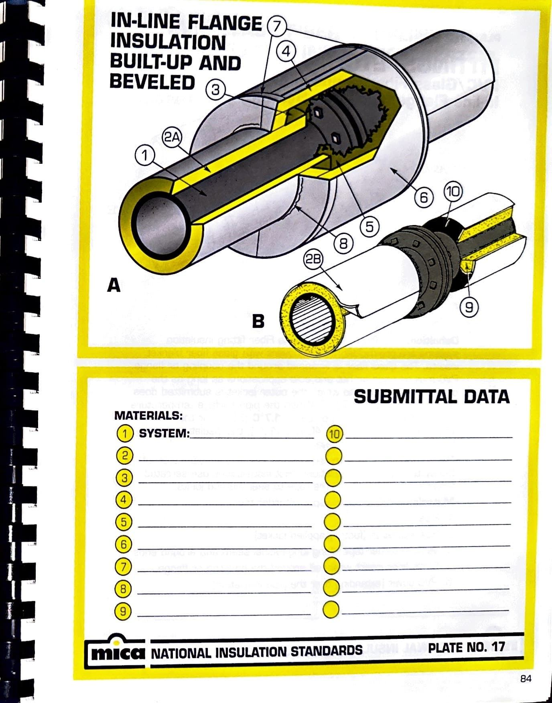
IN-LINE FLANGE 7 INSULATION BUILT-UP AND BEVELED MATERIALS: SYSTEM: 10 2B SUBMITTAL DATA IO muca NATIONAL INSULATION STANDARDS PLATE No.
17 84
Page 91
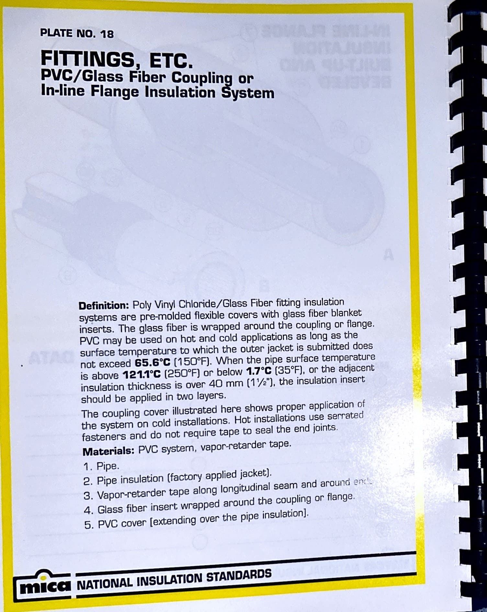
PLATE No.
18 FITTINGS, ETC.
PVC/Glass Fiber Couplin or In-line Flange Insulation ystem Definition: Poly Vinyl Chloride/Glass Fiber fitting insulation systems are pre-molded flexible covers with glass fiber blanket inserts.
The glass fiber is wrapped around the coupling or flange.
PVC may be used on hot and cold applications as long as the surface temperature to which the outer jacket is submitted does not exceed 65.60C (1 500F).
When the pipe surface temperature is above 121.10C (2500F) or below 1.70C (350F), or the adjacent insulation thickness is over 40 mm (11/2"), the insulation insert should be applied in two layers.
The coupling cover illustrated here shows proper application of the system on cold installations.
Hot installations use serrated fasteners and do not require tape to seal the end joints.
Materials: PVC system, vapor-retarder tape.
1.
Pipe.
2.
Pipe insulation (factory applied jacket).
3.
Vapor-retarder tape along longitudinal seam and around 4.
Glass fiber insert wrapped around the coupling or flange, 5.
PVC cover [extending over the pipe insulation].
nuca NATIONAL INSULATION STANDARDS
Page 92
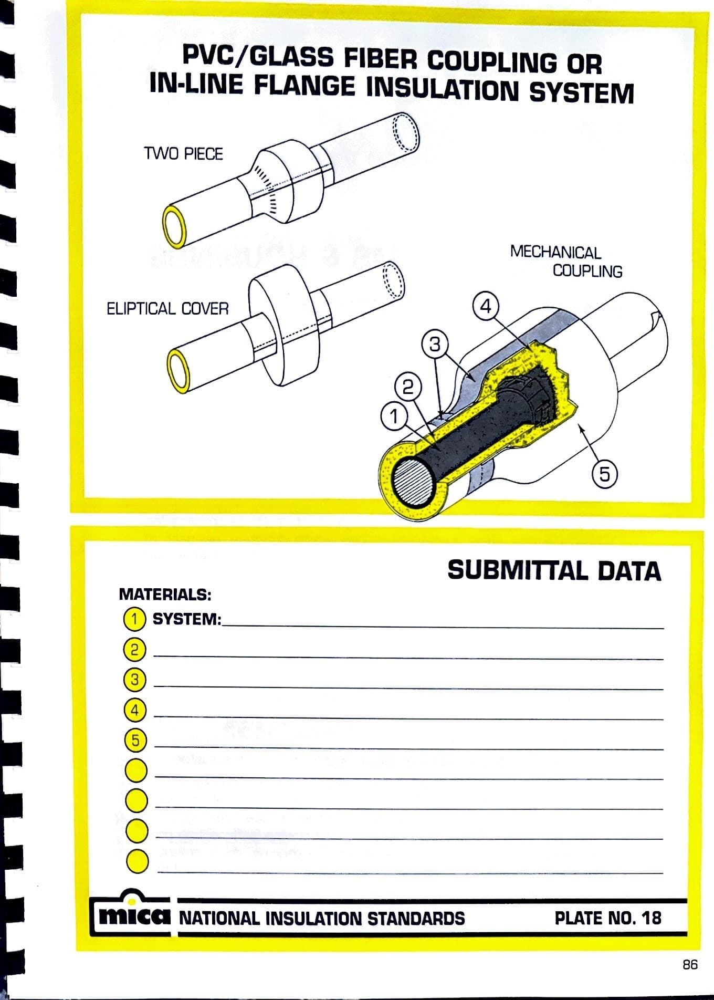
PVC/GLASS FIBER COUPLING OR IN-LINE FLANGE INSULATION SYSTEM TWO PIECE ELIPTICAL COVER MECHANICAL COUPLING SUBMITTAL DATA MATERIALS: SYSTEM: muca NATIONAL INSULATION STANDARDS PLATE NO.
18 86
Page 93
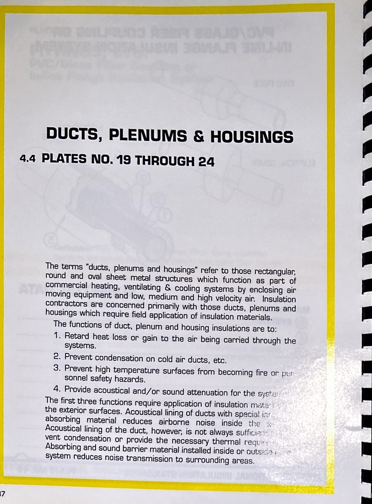
DUCTS, PLENUMS & HOUSINGS 4.4 PLATES NO.
19 THROUGH 24 The terms "ducts, plenums and housings" refer to those rectangular, round and oval sheet metal structures which function as part of commercial heating.
ventilating & cooling systems by enclosing air moving equipment and low, medium and high velocity air.
Insulation contractors are concerned primarily with those ducts, plenums and housings which require field application of insulation materials.
The functions of duct, plenum and housing insulations are to: 1.
Retard heat loss or gain to the air being carried through the systems.
2.
Prevent condensation on cold air ducts, etc.
a.
Prevent high temperature surfaces from becoming fire or per sonnel safety hazards.
4.
Provide acoustical and/or sound attenuation for the syst(2'f The first three functions require application of insulation mc.t.- the exterior surfaces.
Acoustical lining of ducts with special irr, absorbing material reduces airborne noise inside the Acoustical lining of the duct, however, is not always vent condensation or provide the necessary thermal Absorbing and sound barrier material installed inside or ; system reduces noise transmission to surrounding areas.
7
Page 94
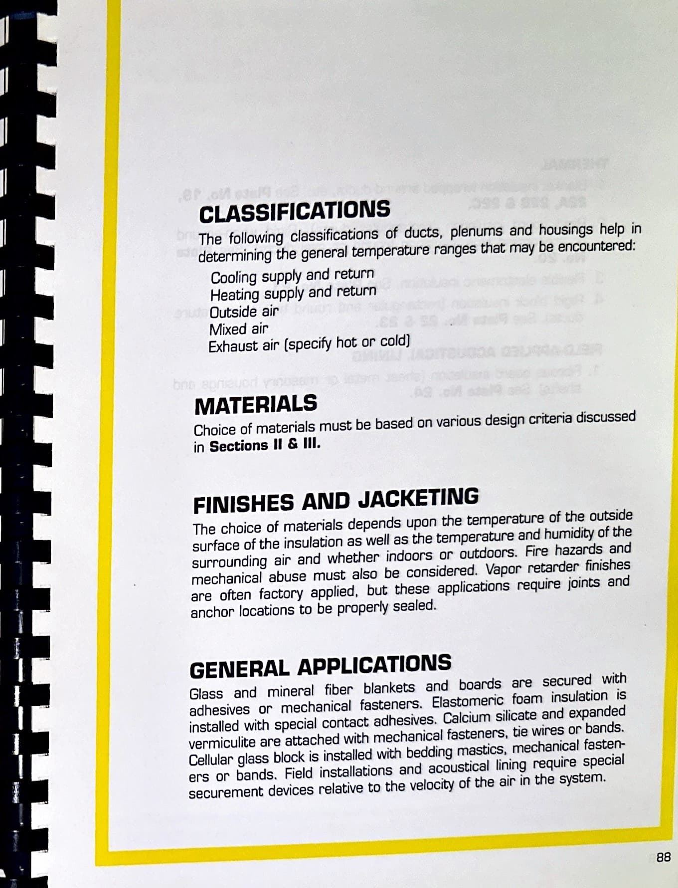
1 CLASSIFICATIONS The following classifications of ducts, plenums and housings help in determining the general temperature ranges that may be encountered: Cooling supply and return Heating supply and return Outside air Mixed air Exhaust air (specify hot or cold) MATERIALS Choice of materials must be based on various design criteria discussed in Sections II & III.
FINISHES AND JACKETING The choice of materials depends upon the temperature of the outside surface of the insulation as well as the temperature and humidity of the surrounding air and whether indoors or outdoors.
fire hazards and mechanical abuse must also be considered.
Vapor retarder finishes are often factory applied, but these applications require joints and anchor locations to be properly sealed.
GENERAL APPLICATIONS Glass and mineral fiber blankets and boards are secured with adhesives or mechanical fasteners.
Elastomeric foam insulation is installed with special contact adhesives.
Calcium silicate and expanded vermiculite are attached with mechanical fasteners, tie wires or bands.
Cellular glass block is installed with bedding mastics, mechanical fasten- ers or bands.
Field installations and acoustical lining require special securement devices relative to the velocity of the air in the system.
88
Page 95
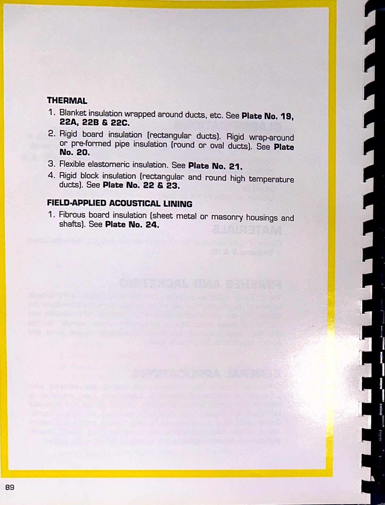
THERMAL 1.
Blanket insulation wrapped around ducts, etc.
See Plate No.
19, 22A, 22B & 22C.
2.
Rigid board insulation (rectangular ducts).
Rigid wrap-around or pre-formed pipe insulation (round or oval ducts).
See Plate No.
20.
8.
Flexible elastomeric insulation.
See Plate No.
21.
4.
Rigid block insulation (rectangular and round high temperature ducts).
See Plate No.
22 & 23.
FIELD-APPLIED ACOUSTICAL LINING 1.
Fibrous board insulation (sheet metal or masonry housings and shafts).
See Plate No.
24.
89
Page 96
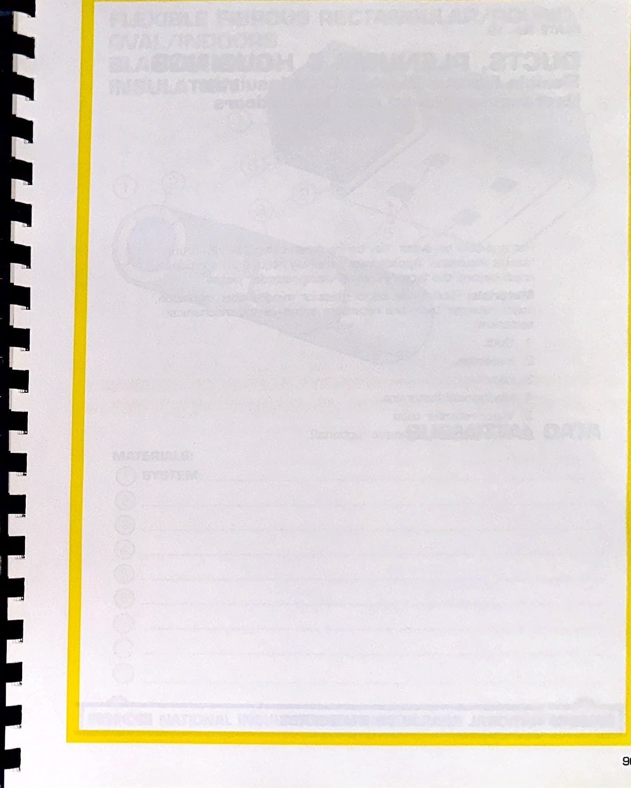
No OCR text was detected on this source page.
Page 97
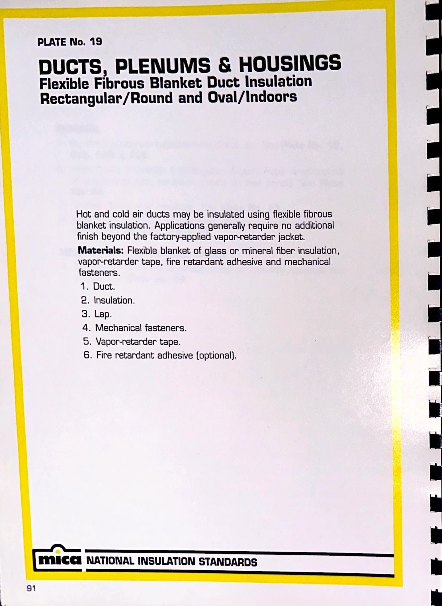
PLATE No.
19 DUCTS, PLENUMS & HOUSINGS Flexible Fibrous Blanket Duct Insulation Rectangular/Round and Oval/lndoors Hot and cold air ducts may be insulated using flexible fibrous blanket insulation.
Applications generally require no additional finish beyond the factory-applied vapor-retarder jacket.
Materials: Flexible blanket of glass or mineral fiber insulation, vapor-retarder tape, fire retardant adhesive and mechanical fasteners.
1.
Duct 2.
Insulation.
3.
Lap 4.
Mechanical fasteners.
5.
Vapor-retarder tape.
6.
Fire retardant adhesive (optional).
muca NATIONAL INSULATION STANDARDS
Page 98
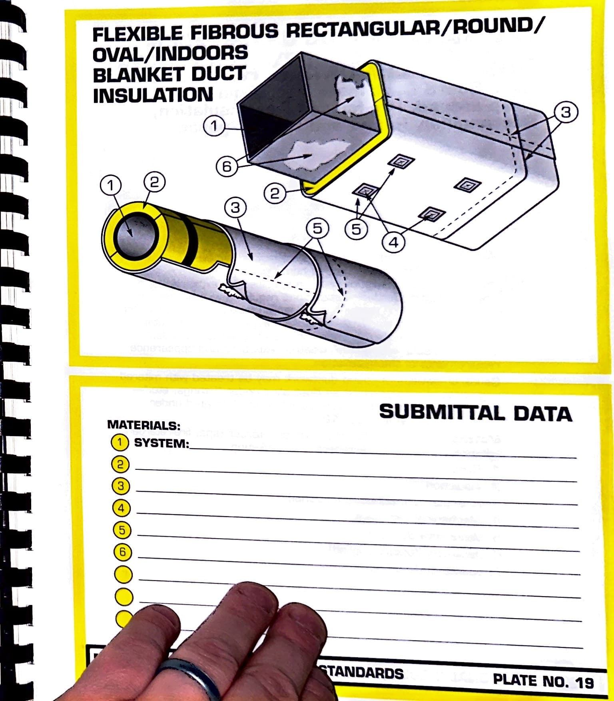
FLEXIBLE FIBROUS RECTANGULAR/ROUND/ OVAL/INDOORS BLANKET DUCT INSULATION MATERIALS: SYSTEM• SUBMITTAL DATA TANDARDS PLATE No.
19
Page 99
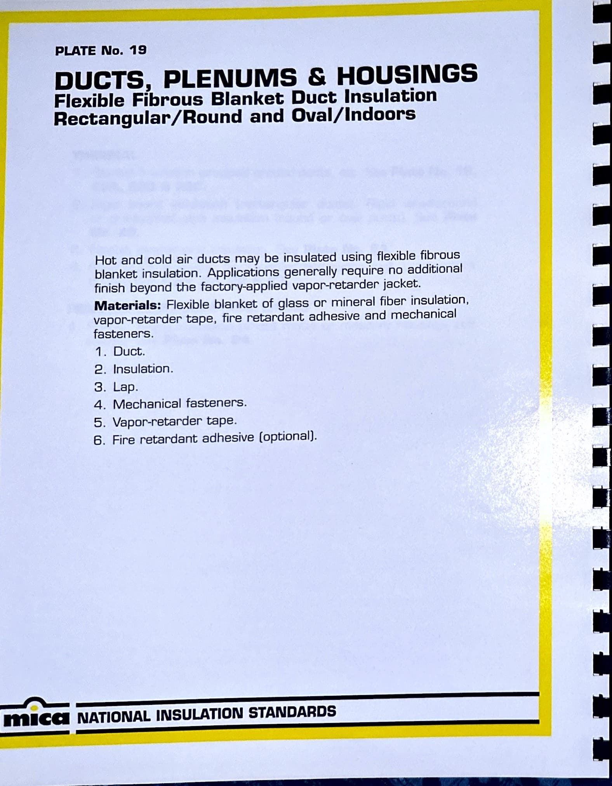
PLATE No.
19 DUCTS, PLENUMS & HOUSINGS Flexible Fibrous Blanket Duct Insulation Rectangular/ Round and Oval/lndoors Hot and cold air ducts may be insulated using flexible fibrous blanket insulation.
Applications generally require no additional finish beyond the factory-applied vapor-retarder jacket.
Materials: Flexible blanket of glass or mineral fiber insulation, vapor-retarder tape, fire retardant adhesive and mechanical fasteners.
1.
Duct.
2.
Insulation.
3.
Lap 4.
Mechanical fasteners.
5.
Vapor-retarder tape.
Fire retardant adhesive (optional).
6.
muca NATIONAL INSULATION STANDARDS
Page 100
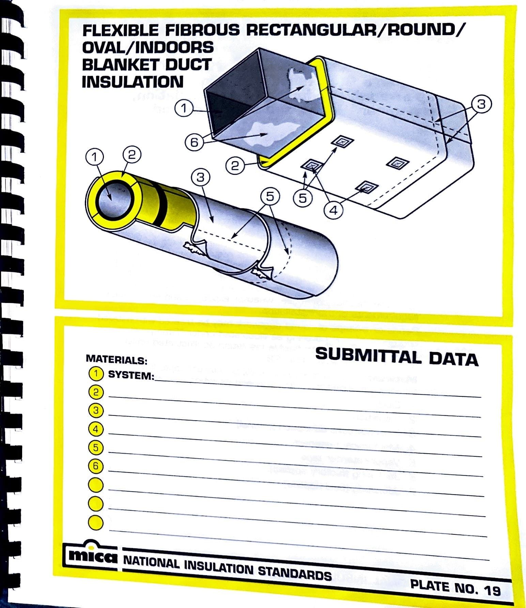
FLEXIBLE FIBROUS RECTANGULAR/ROUND/ OVAL/INDOORS BLANKET DUCT INSULATION SUBMITTAL DATA MATERIALS: SYSTEM: muca NATIONAL INSULATION STANDARDS PLATE NO.
ns
Page 101
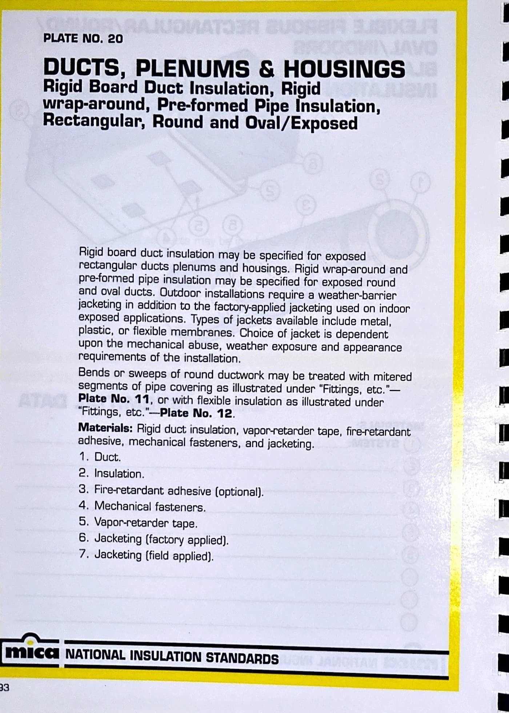
PLATE NO.
20 DUCTS, PLENUMS & HOUSINGS Rigid Board Duct Insulation, Rigid wrap-around, Pre-formed Pipe Insulation, Rectangular, Round and Oval/Exposed Rigid board duct insulation may be specified for exposed rectangular ducts plenums and housings.
Rigid wrap-around and pre-formed pipe insulation may be specified for exposed round and oval ducts.
Outdoor installations require a weather-barrier jacketing in addition to the factory-applied jacketing used on indoor exposed applications.
Types of jackets available include metal, plastic, or flexible membranes.
Choice of jacket is dependent upon the mechanical abuse, weather exposure and appearance requirements of the installation.
Bends or sweeps of round ductwork may be treated with mitered segments of pipe covering as illustrated under "Fittings, etc."— Plate No.
11.
or with flexible insulation as illustrated under "Fittings, No.
12.
Materials: Rigid duct insulation, vaporætarder tape, fire-retardant adhesive, mechanical fasteners, and jacketing.
1.
Duct.
2.
Insulation.
3.
Fire-retardant adhesive (optional).
4.
Mechanical fasteners.
5.
Vapor-retarder tape, 6.
Jacketing (factory applied).
7.
Jacketing (field applied).
muca NATIONAL INSULATION STANDARDS 33
Page 102
RIGID BOARD DUCT INSULATION RECTANGULAR/ROUND/OVAL/EXPOSED SUBMITTAL DATA MATERIALS: O SYSTEM: muca NATIONAL INSULATION STANDARDS PLATE NO.
20
Page 103
II PLATE NO.
21 DUCTS, PLENUMS & HOUSINGS ELASTOMERIC DUCT INSULATION RECTANGULAR/ROUND Elastomeric insulation may be specified on cold and moderate temperature ducts.
Insulation should be fastened to the metal duct with adhesive.
Outdoor applications must be finished with an ultraviolet resistant paint or a field or factory applied protective jacket.
Jacketing may also be applied indoors for aesthetics, wash- down, or mechanical abuse protection.
Standing seams or stiffeners may be insulated with a layer of insulation to seal the system.
Materials: Elastomeric sheet or rolls, adhesive, finishes, and jacketing.
1.
2.
8.
4.
5.
6.
Rectangular duct.
Elastomeric insulation.
Adhesive as required.
Finish.
Jacketing.
Standing seam insulation.
muca NATIONAL INSULATION STANDARDS
Page 104
FLEXIBLE ELASTOMERIC SHEET ON DUCT SUBMITTAL DATA MATERIALS: SYSTEM: m•ca NATIONAL INSULATION STANDARDS PLATE NO.
21 96
Page 105
PLATE NO.
22 DUCTS, PLENUMS & HOUSINGS: HIGH TEMPERATURE BLOCK AND BOARD INSULATION BREECHINGS, FLUES AND KITCHEN EXHAUST DUCTS Rectangular metal ducts or encasements which must be insulated for high temperatures 148.90C (3000F+) or fire hazard control, fall under the general category of breechings, flues and kitchen exhaust ducts.
The metal surfaces are often reinforced with stiffeners and/or flanged connections which protrude above the surface of the insulation medium.
Such protrusions may be insulated as illustrated.
The design of air space as illustrated in (A) is optional on hot ducts or encasements depending on operating temperature extremes and the metal type and gauge of the duct.
In the case of kitchen exhaust ducts, design should be based on local code requirements and job site conditions.
Detail A - Duct with air space (block insulation with jacketing finish shown).
Detail B - Duct without air space (board insulation mastic finish shown).
Materials: High temperature blocks, boards, metal lath or vvi{h fabric, corner bead, steel bands, wire, mechanical fasteners, wire mesh or reinforcing fabric, weather-barrier mastic.
1.
2.
3.
4.
5.
6.
7.
8.
9.
Duct, breeching or flue.
Blocks applied in staggered joint position.
Metal lath or wire fabric stretched over stiffener and secured.
Stiffener or flanged duct connection.
Steel bands, mechanical fasteners or wire securing insulation in place.
Jacketing applied for mechanical abuse protection, appear- ance requirements or weather protection (shown as metal secured with screws).
Board insulation applied directly to the duct surface, thickness greater than the depth of stiffener.
(Alternate material is high temperature blanket insulation.
(See Plate No.
22A).
Corner bead (optional).
Reinforcing fabric or mesh embedded between two layers of weather-barrier mastic (outdoor application), or insulation cement.
muca NATIONAL INSULATION STANDARDS
Page 106
BREECHINGS WITH STIFFENERS BREECHINGS, FLUES AND KITCHEN EXHAUST DUCTS MATERIALS: SYSTEM: 5 HIGH TEMPERATURE BLOCK AND BOARD INSULATION SUBMmAL DATA muca NATIONAL INSULATION STANDARDS PLATE NO.
22 98
Page 107
PLATE NO.
22A DUCTS, PLENUMS & HOUSINGS Exhaust and Kitchen Exhaust Ducts High temperature blanket Exhaust ducts that must be insulated for high temperature operating conditions 148.90C+ (8000F+) or containment of a fire hazard.
LJse a listed high temperature blanket in a I or 2 layer system to provide required fire rating.
System design shou}d be based on manufacturers' recommendations* , local code require- ments and job conditions.
Materials: High temperature blanket (listed and labeled for specific duct system), tape (filament or foil), steel bands, and mechanical fasteners.
1.
Duct.
2.
First layer — listed high temperature blanket 3.
Second layer (if required per local code requirements) — listed high temperature blanket 4.
Banding or tape to secure insulation.
5.
Mechanical fasteners (if required).
6.
7.6cm (3") overlap (or as required) 7.
Steel banding.
*Refer to manufacturers' Independent 3rd party Ijsungs and installation details prior to installing high temperature blanket.
nuca NATIONAL INSULATION STANDARDS
Page 108
EXHAUST AND KITCHEN EXHAUST DUCT HIGH TEMPERATURE BLANKET INSULATION SUBMITTAL DATA MATERIALS: SYSTEM: muca NATIONAL INSULATION STANDARDS PLATE NO.
22A 100
Page 109
PLATE NO.
22B DUCTS, PLENUMS & HOUSINGS Ventilation Ducts High temperature blanket Ventilation ducts that are required to be enclosed within a fire rated shaft when passing through fire rated floor/ceiling assemblies and fire partitions.
Ducts may be part of a general air supply or a dedi- cated smoke control system.
Ducts shall be protected with a flexible high temperature blanket system.
High temperature blanket is used in single or multiple layers to provide required fire rating.
System design should be based on manufacturers' recommendations* i local code requirements and job conditions.
Materials: High temperature blanket (listed and labeled for specific duct system), tape (filament or foil), steel bands, and mechanical fasteners.
I.
Duct.
2.
First layer — listed high temperature blanket 3.
Second layer (if required per local code requirements) high temperature blanket 4.
Banding or tape to secure insulation.
5.
Mechanical fasteners (if required).
6.
7.6cm overlap (or as required) 7.
Steel banding.
*Refer to manufacturerS independent 3rd parW listings and installation details prior to installing high temperature blanket muco NATIONAL INSULATION STANDARDS 101 lil
Page 110
VENTILATION DUCT HIGH TEMPERATURE BLANKET INSULATION SUBMITTAL DATA MATERIALS: O SYSTEM: nuca NATIONAL INSULATION STANDARDS PLATE NO.
22B 102
Page 111
PLATE NO.
22C DUCTS, PLENUMS & HOUSING Plenums Containing Combustible Items High temperature blanket Plastic or plastic coated items located in plenum areas that do not comply with combustibility requirements as defined by code may be insulated with high temperature insulating blanket sys- tems.
The insulation provides protection for these items by pre- vening flame spread and smoke development when combustible items are exposed to fire conditions in the plenum area.
High temperature blanket is used in single layer to provide required fire rating.
System design should be based on manufacturers' recommendations* , local code requirements and job conditions.
Materials: High temperature blanket (listed and labeled for specific plenum item protection system).
tape (filament or foil), steel bands.
1.
Combustible item (pipe, cable, etc.).
2.
Single layer — listed high temperature blanket.
3.
Banding or tape to secure insulation.
4.
2.5cm (1") overlap (or as required).
*Refer to manufacturers independent 3rd party Itsungs and installation details prtor to installing high temperature blanket.
muca NATIONAL INSULATION STANDARDS 103
Page 112
PLENUMS CONTAINING CONBUSTIBLE ITEMS HIGH TEMPERATURE BLANKET oo SUBMITTAL DATA MATERIALS: SYSTEM: nuca NATIONAL INSULATION STANDARDS PLATE NO.
22C 104
Page 113
PLATE NO.
23 DUCTS, PLENUMS & HOUSINGS Blocks & Pre-formed Pipe Insulation Round Breeching & Exhaust Ducts Round breechings or exhausts with temperatures above 260.00C (5TF) may be insulated with rigid blocks mitered or scored to fit the breeching circumference, or with pre-formed pipe insulation segments.
High rib metal lath or a cushion blanket of fibrous insulation may be necessary where the degree of expansion could break seals or bands.
Detail A - Mitered or scored blocks on high rib lath.
Detail B • Pre-formed segments of pipe insulation on cushion blanket.
Materials: Block insulation (mitered or scored to designed circumference), pre-molded pipe insulation segments, high rib metal lath, wire and steel banding, fibrous blanket insulation, metal jacketing, finishing cement and reinforcing mesh or fabric, 1.
Breeching surface.
2.
Air space material.
Rigid block insulation (mitered or scored to designed 3.
circumference) shown in staggered joint position.
4.
Wire or steel banding.
5.
Field-applied metal jacketing secured with sheet metal screws.
6.
Cushion blanket of high temperature fibrous insulation secured in place with wires or staples.
7.
Segments of pre-formed pipe insulation installed in staggered joint position shown.
8.
Two layers of finishing cement reinforced with mesh or fabric.
Fabric jacketing adhered to the smooth surface of the cement.
9.
nuca NATIONAL INSULATION STANDARDS
Page 114
BLOCKS & PREFORMED PIPE INSULATION ROUND BREECHING & EXHAUST DUCTS SUBMITTAL DATA MATERIALS: SYSTEM: muca NATIONAL INSULATION STANDARDS PLATE NO.
23 10E
Page 115
PLATE NO.
24 DUCTS, PLENUMS & HOUSINGS Field Applied Lining • Low and Medium Velocity Systems Lining, when field applied to the inside surface of housings or shafts, is attached by means of adhesives and mechanical fasteners, depending on the size of the housing and the velocity of the air moving though it.
* All exposed leading edges and transverse joints are taped or coated with sealer to hold insulation firmly in place.
Materials: Coated liner or rigid board, adhesive, mechanical fasteners and joint sealer.
I.
Housing or shaft.
2.
Liner or fibrous board insulation.
a.
Adhesive.
4.
Mechanical fasteners.
5.
Joint sealer.
*High velocity ducts.
plenums and housings are normally insulated externally.
muca NATIONAL INSULATION STANDARDS 107
Page 116
FIELD APPLIED LINING - LOW AND MEDIUM VELOCITY SYSTEMS MATERIALS: SYSTEM: SUBMITTAL DATA muca NATIONAL INSULATION STANDARDS PLATE NO.
24 108
Page 117
VESSELS, TANKS AND EQUIPMENT 4.5 PLATES NO.
25 THROUGH 35 The term equipment applies to rectangular, cylindrical or irregular shaped mechanical devices which function within the heating/ ventilating/cooling.
plumbing, steam, or process systems of industrial and commercial facilities.
CLASSIFICATIONS Cold OOC to 21.10C (320F to 700F) Water coolers Water chillers Chilled water pumps Domestic and process cold water equipment Chilled water storage tanks Hot 21.70C to 315.60C (71 OF to 6000F) Hot water storage tanks Hot water pumps Fuel oil heaters Deaerators/condensate receivers Booster heaters Heat exchangers Hot water converters or generators Power and process equipment Extreme Above 315.SOC (6000F) and below OOC (320F)) Boilers Power and process equipment (turbines, stacks, etc.) Refrigerant equipment (accumulators, suction traps, etc.) Refrigerant tanks (liquid nitrogen, ammonia, brine, etc.) Emergency generator exhaust 1 og
Page 118
MATERIALS USED Choice of materials must be based on various design criteria discussed in Sections II & III.
GENERAL APPLICATION 1.
Blocks and mitered pipe insulation segments (see Plate No.
25, 29, 29A, 30 S 31).
2.
Rigid board (See Plate No.
26).
3.
Rigid wrap-around glass fiber (See Plate No.
27).
4.
Elastomeric sheets (See Plate No.
28).
5.
Flexible blanket (See Plate No.
25).
6.
Pre-engineered panel systems — apply according to manufactur- ers' instructions.
7.
Cement — reinforced insulating cements finished with fabric, may be used on pumps or other irregular equipment surfaces.
Cement covers the body of the equipment, tapering off and finished at fitting areas for easy access.
Mineral fiber cement is used for high temperature applications.
One-coat cement may be used in moderate temperatures or as a finish to other insulations.
Cold applications require an additional vapor-retarder treatment.
SECUREMENT Mechanical fasteners may or may not be used on vessel surfaces depending on the design of the vessel, its surface temperature and the fire hazard potential involved.
Stainless steel bands are recom- mended for securing blocks, board or metal jacketing on applications which (1) cannot use surface mechanical fasteners, (2) involve large diameters or (3) are subject to significant expansion and contraction.
Stainless steel is recommended on these installations because of its strength and resistance to corrosion.
Insulation supports are recommended on large vessels and tanks and should be installed by the vessel fabricator.
Special consideration should be given prior to welding on vessels, tanks & equipment.
The use of expansion springs where vessel is subject to significant expansion and contraction is recommended.
FITTINGS See "Fittings.
etc." for proper application methods on equipment fittings.
Nozzle and manhole cover insulation is illustrated on Plate No.
33.
Ill
Page 119
TANK TOPS EXPANSION CONTRACTION S 29A FLASHING TURBINE INSULATION LEGS SUPPORTS AND SKIRTS Plates No.
34 & 35 Plates No.
29 Sert d.
Plate FINISHES AND JACKETING InformatJon concerntng choice of finishes on Industrial Installataor• may be found Jn Section Ill
Page 120
No OCR text was detected on this source page.
Page 121
PLATE NO.
25 VESSELS, TANKS AND EQUIPMENT Large Diameter Vertical Vessels Block and Blanket Insulation Vessels and tanks having outside diameters of over 750 mm (30") and surface temperatures ranging from 43.30C to 537.80C (1100F to 10000F) may be insulated using flexible blanket or rigid blocks as illustrated, or pre-insulated panels.
Alternative applications include the use of scored rigid insulation boards.
(Plate No.
26), rigid wrap- around insulation (Plate No.
27), or pre-insulated panels.
Detail A • Flexible blanket insulation impaled on pins Detail B - Rigid block insulation — banded Materials: Flexible blanket insulation, weld pins, rigid insulation blocks, temporary bands or tie wires, corrugated or box rib or smooth sheet metal, plastic sheeting, mechanical fasteners, bands and fabricated tank head cover.
1 .
Vessel wall.
2.
Support ring for top head insulation.
8.
Blanket insulation secured at support ring and impaled vertically on studs or pins along the surface of the vessel.
4.
Studs or pins.
Specify type and centers vertically and horizontally.
5.
Rigid insulation blocks applied with staggered joints, banded.
6.
Intermediate insulation support ring.
7.
Metal or plastic jacketing secured with mechanical fasteners.
8.
Mechanical fasteners.
9.
Bands and "S" clips.
Provide for expansion if necessary, specify type, size & centers.
10.
Top head insulation — blocks, cut and mitered to conform to Ch; 12.
surface curvature.
(See Plate No.
35.) 1 1 .
Fabricated tank head cover.
Head and shell joint flashing.
13.
Vessel nozzles (See Plate No.
33.) 14.
Vessel bottom, leg and inside skirt insulation (See Plate No.
34.) 15.
Vessel skirt.
muca NATIONAL INSULATION STANDARDS 113 — blocks
Page 122
LARGE DIAMETER VERTICAL VESSELS BLOCK AND BLANKET 10 11 INSULATION 12 "S" CLIP SUBMITTAL DATA MATERIALS: SYSTEM: 10 11 12 13 13 14 15 14 15 muca NATIONAL INSULATION STANDARDS PLATE NO.
25 114
Page 123
PLATE No.
26 VESSELS, TANKS AND EQUIPMENT Curved Surfaces Rigid Board Insulation Rigid board insulations are used primarily on flat surfaces such as breechings and flues.
If scored, beveled and/or cut to the curvature of the tank rigid boards can be made to conform to the surface curvature of vessels, support legs, skirts and other irregular surfaces.
When installed in potential splash, wash-down or flood areas (where water absorption and wicking may occur) the bottom tier of insulation should be cellular glass sealed to the base to prevent water ingress.
Materials: Rigid board insulation, jacketing, bands and mechanical fasteners.
1.
Vessel wall.
2.
Insulation.
a.
Mechanical fasteners.
4.
Bands and "S" clips as required.
(See Plate No.
25 for deha Provide for expansion if necessary.
5.
Cellular glass sealed to the base.
6.
Jacketing.
7.
Head flashing.
8.
Caulking/flashing at fittings.
(see Plate No.
33) muca NATIONAL INSULATION STANDARDS 115
Page 124
CURVED SURFACES RIGID BOARD INSULATION PROCESS STORAGE TANK SUBMITTAL DATA MATERIALS: SYSTEM: nuca NATIONAL INSULATION STANDARDS PLATE NO.
26 116
Page 125
VESSELS, &ANKS Rigid 'Wrap-around Onsula±ion Vessels and tanks may 'be insulated using rigid wrap-around type insulation.
Rigid wrap-around insulation can be fabricated by adhering Insulation segments to a facing jackeüng, it may .be purchased prefabricated.
Cold applications require vapor- retarder sealing at penetrations and/or mechanical fasteners.
in addiüon to the above, extreme -cold applications require care and consideration when making material -selection for these applications Materials: •Rigid wrap-around insulation With facing or Jackeüng, tape, bands, mechanical fasteners, and caulking.
1.
Vessel wall.
E.
'Insuiatton With facing or Jacketing.
E.
Tape.
4.
Mechanical fasteners.
F.
Caulking or flashing.
(See Plate No.
83.) E.
Banding.
9.
Vessel supports and legs.
(See Plate No.
34.) 8.
Insulation With facing or jacketing on ends.
mra NATIONAL INSULATION STANDARDS
Page 126
RIGID WRAP-AROUND INSULATION PROCESS STORAGE TANK SUBMITTAL DATA MATERIALS: SYSTEM: nuca NATIONAL INSULATION STANDARDS PLATE NO.
27 lid
Page 127
PLATE NO.
28 VESSELS, TANKS AND EQUIPMENT Elastomeric Sheets Elastomeric sheets may be applied in single or multiple Kayex Finish with compatible protective coatings when requireé.
manufacturer's recommendations.) Materials: Elastomeric sheets, adhesive, elastomeric pipc covering and protective coating.
I.
Vessel surface.
2.
I-Jse a self adhering system or a contact adhesive applie: vessel surface and elastomeric sheets.
Adhesive muv to the touch before the two surfaces are joined.
3.
Elastomeric sheets fitted and applied in rectanguly wedge shapes.
4.
Compression joints, sealed with contact adhesive.
5.
Vessel legs may be wrapped with a section of elastomeric pipe insulation.
(Legs and protrusions should be insulated a distance of four times the thickness of the insulation away from the vessel surface to prevent condensation.) 6.
Protective coating where required.
muca NATIONAL INSULATION STANDARDS 119
Page 128
ELASTOMERIC SHEETS COLD STORAGE TANK MATERIALS: SYSTEM: 6 SUBMITTAL DATA muca NATIONAL INSULATION STANDARDS PLATE NO.
28 120
Page 129
PLATE No.
29 VESSELS, TANKS AND EQUIPMENT Extreme High Temperature Vessels Block Insulation High temperature above 315.60C (6000F) installations such as boilers and power/process equipment may require double layer block consü•uction, securement of the insulation with bands and the design of expansion joints.
Expansion joint is filled with blanket insulation to absorb linear expansion of vessel when at operating temperatures.
(Material is compressed tightly into joint.) Detail A — Expansion joint (typical).
Detail B — Double layer staggered joint construction.
Materials: Rigid block insulation, fiber blanket insulation, jacketing, bands, stranded cable and weather barrier mastic.
1.
Vessel surface.
2.
Expansion joint insulation.
3.
Expansion joint.
(See detail A, also Plate No.
35, detail D-6).
4.
Direction of linear expansion.
5.
Insulation.
6.
Jacketing.
7.
Bands.
(Provide for expansion).
8.
Head insulation shown secured with a floating ring of cable fastened to another ring of cable under head flange.
(See detail A, also Plate No.
35 — detail A & D).
9.
Tank head jacket or finish.
(See Plate No.
35 — detail B).
10.
Weather barrier mastic (if required).
11.
Botom insulation.
(High compressive strength required).
muca NATIONAL INSULATION STANDARDS 121 1
Page 130
MATERIALS: SYSTEM• EXTREME HIGH TEMPERATURE VESSELS IO BLOCK INSULATION 11 SUBMITTAL DATA 10 11 muca NATIONAL INSULATION STANDARDS PLATE NO.
29
Page 131
VESSELS, TANKS AND EQUIPMENT Extremo Low Tompornturo Vooøolß Dlock Ingulatlon 090 (OPT) end may Of tihß wim and dBÅion ot oonWßßt,ion iointiß, ßonWßfitilnn nint, when (Material joint,) Detßil A — Contraction joine (WpiGNl), Detail O — Double lover etaggered joint Gonotruotion, Detail C — Joint ooalant appiioation, a, 61, 0, 71 (flee detail A, No, of It:ji' A, No, ati A oj muco NAT10NAL INßULATlON ßTANonnna
Page 132
EXTnCMß LOW TEMPERATUng VCßßßLß BLOCK INßULATlON DATA MATERIAL" nntca NATIONAL IN@ULAUON urAN0Anog PLATE NO,
Page 133
PLATE No.
30 VESSELS, TANKS AND EQUIPMENT Small Diameter Vessels/Exhaust Pipe Insulation Hot vessels.
tanks, exchangers, round breechings and exhaust ducts having outside diameters of less than 750 mm (30") can be insulated with large radius pipe insulation covering materials.
High rib metal lath may be applied on installations over 315.60C (6000F) as shown on Plate No.
22.
Alternate methods are the application of rigid blocks or mitered segments as illustrated on Plate No.
23.
Detail A • Vertical application on vessel Detail B • Horizontal application on tube exchanger Materials: Rigid pipe insulation segments, discs of rigid blocki fill insulation, jacketing, mechanical fasteners, and bands.
1.
Vessel wall.
2.
Insulation support ring.
3.
Insulation.
4.
Disk of rigid insulation cut to fit over head and inside pipe insulation.
5.
Loose fill insulation (optional).
6.
Jacketing.
7.
Mechanical fasteners.
8.
Bands.
9.
Nozzle.
(See Plate No.
33.) IO.
Insulation cut or beveled away from flanges for bolt remov:t finish as required for temperature and exposure.
muca NATIONAL INSULATION STANDARDS 125
Page 134
SMALL DIAMETER VESSELS/EXHAUST PIPE INSULATION 6 VERTICAL VESSEL MATERIALS: SYSTEM: 10 HEAT EXCHANGER 3 SUBMITTAL DATA 10 muca NATIONAL INSULATION STANDARDS PLATE NO.
30 126
Page 135
PLATE NO.
31 VESSELS, TANKS AND EQUIPMENT Large Diameter Horizontal Vessels — Insulation Support and Securement Horizontal vessels, depending on their surface curvature and temperature requirements.
may be insulated using the same materials and application methods described and illustrated on Plate No.
25, 26 and 27.
The major difference in application procedure on horizontal vessels is the securement of insulation along the botom half or third of the vessel.
The method illustrated pertains to insulation on horizontal vessels with outside diameters of 1.8 m (6 feet) or larger.
(Bands are continuous around shell insulation on vessels with outside diameters under 1.8 m (6 feet).) Materials: Insulation, jacketing, bands, insulation support bars (by vessel fabricator), mechanical fasteners and adhesive.
1.
Vessel wall.
2.
Insulation.
a.
Longitudinal center line of the shell.
4.
Support bars tacked to shell at (A) center line of the shell, or (B) IO to 150 below the center line of the shell (by others).
5.
Bands secured to the support bars.
6.
Jacketing secured with mechanical fasteners, adhesive at joints, or bands.
7.
Tank head cover.
(See Plate No.
35.) 8.
See Plate No.
33 for treatment of nozzles.
muca NATIONAL INSULATION STANDARDS 127
Page 136
LARGE DIAMETER HORIZONTAL VESSELS - INSULATION SUPPORT AND SECUREMENT SUPPORT BARS SUBMITTAL DATA MATERIALS: SYSTEM: mrca NATIONAL INSULATION STANDARDS PLATE NO.
31 128
Page 137
BUTE 32 VESSELS, TANKS AND EQUIPMENT Pipe and Tube Exchangers — Encased Combinations of pipe and, block insulation may be applied to racks of pipe, tube exchangers or other irregular shaped.
enclosures, Any of the rigid, high temperature insulation, materials may be used.
(Alternate materials include rigid wrap-around.
insulation, or oversized pipe insulation.) Detail A • Multiple hair pin exchanger Detail B • Double pipe exchangers Materials: Rigid block and pipe insulations, wires, bands, mastic, jacketing, insulating cement and mechanical fasteners.
1.
Exchanger surface.
2.
Exchanger nozzles, tube connections, unions, heads and shell: ends.
(Shown uninsulated.) a.
Pipe insulation.
4.
Block insulation.
5.
Jacketing, 6.
Mechanical fasteners.
7.
Bands.
8.
Insulation cut or beveled away from flanges for access.
as required for temperature and exposure conditions.
g.
Opening at ends closed with block insulation and finished insulating cement or mastic.
maca NATIONAL INSULATION STANDARDS 129
Page 138
susß,trtT2 MATERIALS: SYSTEM: maca NATIONAL INSULATION STANDARDS NO.
32
Page 139
PLATE NO.
33 VESSELS, TANKS AND EQUIPMENT Nozzles and Insulated Manways Depending on the size of the nozzle or manway, its orientation to the vessel and the temperature of the vessel, insulation may be sealed in one of the following ways: Detail A - Flashing and mastic at uninsulated nozzles.
Detail B • Insulated manway cover secured with mechanical fasteners.
Detail C • Insulated manway cover secured with flashing and mastic for cold applications.
Materials: Weather-barrier mastic, metal flashing, pre-insulated metal manway cover, mechanical fasteners and bands.
1 .
Nozzle or manway — uninsulated.
2.
Insulation material shown with metal jacketing.
a.
Metal or fabric flashing banded to the nozzle.
4.
Weather-barrier mastic.
5.
Metal manway cover lined with insulation materials.
6.
Metal seam or end cap.
7.
Metal cover secured to manway by means of threaded stud and nut welded to the manway flange.
8.
Metal cover fits over head jacketing.
9.
Flashing attached to cover between jacket and insulation and secured to head insulation with metal fastener.
muca NATIONAL INSULATION STANDARDS 131
Page 140
NOZZLES AND INSULATED MANWAYS UNINSULATED NOZZLE INSULATED MANWAY COVERS SUBMITTAL DATA MATERIALS: SYSTEM: nuca NATIONAL INSULATION STANDARDS PLATE NO.
33
Page 141
PLATE NO.
34 VESSELS, TANKS AND EQUIPMENT Vessel Bottom Head, Leg, Skirt Insulation and Securement Three methods of securing bottom head.
leg and skirt insulation to vertical vessels are illustrated.
Detail A • Block insulation secured with wires attached to anchors.
Detail B - Insulating or finishing cement reinforced with wire mesh secured to bottom with tie wires.
Detail C • Blanket, board or rigid wrap-around insulation secured with mechanical fasteners.
All illustration details show straight skirts and metal jacketing on exterior insulation with an optional application of fire proofing material below the insulation support.
Shell and botom insulation treatment should extend down the vessel leg/skirt approximately the length of four times the insulation thickness to normalize the metal temperature.
Materials: (A) Block insulation, welded mechanical fasteners, wire anchors, wires, (B) insulating or finishing cement, wire mesh, wire anchors and tie wires, and (C) rigid wrap-around insulation and mechanical fasteners.
1.
Vessel wall.
2.
Vessel skirt or leg.
3.
Vessel insulation and jacketing (shown with metal jacketing which extends down beyond the exterior insulation applicatior' 4.
Fire proofing material (Optional).
5.
Welded mechanical fasteners.
6.
Tie wires.
7.
Wire mesh.
8.
Insulating cement.
9.
Insulation support ring (by vessel fabricator).
muca NATIONAL INSULATION STANDARDS 133
Page 142
2 VESSEL BOTTOM HEAD, LEG, SKIRT INSULATION AND SECUREMENT BLOCK INSULATION INSULATING CEMENT BLANKET, RIGID WRAP-AROUND OR BOARD INSULATION ooo SUBMITTAL DATA MATERIALS: O SYSTEM: nuca NATIONAL INSULATION STANDARDS PLATE NO.
34 134
Page 143
PLATE NO.
35 VESSELS, TANKS AND EQUIPMENT Head Insulation, Securement and Cover Fabrication Head insulation on large diameter vessels must follow the curvature of tie vessel head as opposed to tie head meatrnent illustrated on Plate No.
30.
Securement of the insulation material can follow applicaüons illusü•ated on Plate No.
34 for botom heads, or it can be secured with a floating ring of cable as illuü•ated here.
of the head can be a fabricated protec±ve jacket, or layers of reinforced mastic.
Rigid blocks or board are recommended on flat vessel heads where foot ü•afic is likely.
Detail A • Floaüng ing of bands and cable Detail B - Fabricaüon of metal head insulation cover Detail C - Insulation of flat vessel head with I-beams and walkway Detail D - Detail — Floaüng ring of bands and cable Materials: Cable.
bands, jacketing, mechanical insulaüon, mastic and reinforcing mesh.
1.
Vessel wall.
2.
Insulation.
3.
Floaüng ülg of cable.
4.
Bands 5.
Shell insulation.
6.
Insulation support ring (not required for horizontal vessels).
7.
Expansion joint betw'een support ring and shell insulation packed witl insulation.
8.
Jacketing cut in gores, to overlap and conform to the surface of the head insulation.
9.
Band at base of head insulation cover.
IO.
Mechanical fasteners.
11.
Heald density insulation for walkway.
12.
Reinforced mastic.
13.
Caulking and flashing as required.
14.
Banding to secure rim angle.
15.
Metal I-beams used to stiffen structure (by others).
muca NATIONAL INSULATION STANDARDS 135
Page 144
FLOATING RING HEAD INSULATION SECUREMENT 18 11 MATERIALS: SYSTEM: 12 10 B METAL HEAD INSULATION COVER HEAD INSULATION, 14 SECUREMENT AND COVER FABRICATION SUBMITTAL DATA 10 11 12 13 14 15 mrca NATIONAL INSULATION STANDARDS PLATE NO.
35 136
Page 145
POWER SECTION 4.6 PLATES NO.
35A & 35B This applies to Yne power generating process.
This includes fossil fueled power facilities and co-generation units generating electricity from disposable waste materials.
Many of the applica- tions in this Section are covered in other Sections i.e.
4.2 Piping, Plates 1-9; 4.3 Fitings, Plates 10-18; 5.6 Removable and Reusable Insulation Blankets and Covers, Plates 46-50.
CLASSIFICATIONS Boilers: There are many designs of boilers, but the majority now are tube type boilers which require a build up of the insulation from tie surface of the boiler wall.
Plenums G Breeching: Includes economizers, scrubbers and ducts routed to the stack for exhausting into the air.
This equip- ment must reduce the temperature of the exhaust gases, clean or reduce the amount of particulate emmited to the atmosphere.
GENERAL APPLICATION Two most used applications are field assembled insulation or pre- assembled panels for plenums & breeching.
Boiler wall insulation is field installed SECUREMENT Weld pins either factory applied or field applied are the most commonly used method of securing the insulation to boilers, plenums & breechings.
The securement of the finish or outer surface is done With some type of stand-off and subgirt welded to the surface.
Stand-offs must be of sufficient depth to allow for installation of the insulation,
Page 146
MATERIALS USED The same basic insulation matemals used on piptng and fiüngs are used on boilers, plenums & breechings.
For desagn crterta see Section 11 S 111.
COVERS AND FINISHES The outside finishing can be a steel, alumrnum or other corrugated or flat configuration as preferred.
Some outside finishes can be patnted as to owner preference.
13B
Page 147
PLATE NO.
35A BOILER WALLS There are many types of boilers and designs.
This is a tube type boiler commonly used in the power industry.
Materials: Insulation, weld pins, standoffs, washers, subgirt, lagging material, fasteners.
1.
Boiler side shell tubes.
2.
Weld pin attached to boiler shell in tube membrane.
a.
Stand-off welded to boiler tube membrane.
4.
Double layer insulation, staggered joints.
5.
Washer.
6.
Subgirt attached to stand off.
7.
Lagging material fastened to subgirt.
8.
Fasteners for subgirt and lagging material.
muca NATIONAL INSULATION STANDARDS 29
Page 148
BOILER WALLS o —Ill SUBMITTAL DATA MATERIALS: SYSTEM: maca NATIONAL INSULATION STANDARDS PLATE NO.
35A 140
Page 149
PLATE NO.
35B INDUSTRIAL BREECHINGS Exhaust gases are directed to the stack by the breeching.
These gases are very hot and corrosive.
The gas temperatures must be reduced before emission into the atmosphere.
Compensation for expansion and contraction shall be incorporated in the design criteria.
Materials: Insulation, weld pins, washers, standoffs, subgirti lagging material, fasteners.
1.
Breeching.
2.
Weld pins.
3.
Stand-offs equal to the thickness of insulation, welded to surface.
4.
Insulation.
5.
Washer.
6.
Subgirt attached to stand-off.
7.
Lagging material attached to subgirt.
8.
Fasteners for subgirt and lagging material.
9.
Closure strips as required.
IO.
Flashing to match lagging material attached with fasteners.
muca NATIONAL INSULATION STANDARDS 141
Page 150
INDUSTRIAL BREECHINGS MATERIALS: SYSTEM: SUBMITTAL DATA muca NATIONAL INSULATION STANDARDS PLATE NO.
35B 142